First, we will install and load the necessary packages for this study. Additionally, we will load the required datasets. The analysis is based on three datasets:
Mortality: Downloaded from the World Health Organization, this is the primary dataset for the analysis. It contains the number of tuberculosis-related deaths in all countries. However, our study will focus solely on European countries.
Population: From this dataset, we will extract only the population variable. The source of this data is Our World in Data.
GDP per capita: Similar to the population dataset, we will extract only the gdp_per_capita variable. The source of this data is Data Bank.
First, we will define the criteria for dividing European countries into six distinct regions: North, South, West, East, Central, and the Balkans. The Balkans have been designated as a separate region due to their significant cultural differences from neighboring countries. We will add a new variable to the dataset that specifies the subregion to which each country belongs.
The map below shows the division that would be used from this point forward.
We are considering Greece as part of the Southern region due to the cultural differences with the Balkan countries. Now, we would choose a country to represent each European subregion. We will select five European countries to analyze their trends in the number of tuberculosis-related deaths. The selection criteria will ensure that the chosen countries represent different regions of Europe (e.g., North, South, etc.) while also having a sufficient number of time observations to construct a reliable time series. Additionally, we aim to include countries that exhibit distinct trends in tuberculosis mortality, making the study more insightful by allowing for a comparative analysis and accurate forecasting of different patterns.
As a first step, we will address any missing values (NA) in the dataset for the variable Number_Deaths in each selected country. We are going to choose countries that at least have 40 years with data.
country_name n
1 Netherlands 73
2 Iceland 72
3 Sweden 72
4 Denmark 71
5 France 71
6 Ireland 71
7 Spain 71
8 Switzerland 71
9 United Kingdom of Great Britain and Northern Ireland 71
10 Finland 70
11 Italy 70
12 Hungary 68
13 Austria 67
14 Belgium 67
15 Norway 66
16 Portugal 62
17 Poland 61
18 Greece 60
19 Romania 60
20 Bulgaria 58
21 Luxembourg 56
22 Malta 55
23 Latvia 42
24 Estonia 40
25 Lithuania 40
26 Russian Federation 40
Southern Europe. Due to the geographical origin of the authors, we will choose Spain as the representative country of this region.
Northern Europe. We observe that Iceland has 72 out of 74 years with recorded values for the selected variable, making it a suitable choice to represent the North region of Europe.
Western Europe. As Netherlands is the country with a greatest number of values, it would be our choice for this specific region.
Eastern Europe. It is noticeable that eastern countries are the ones with a less number of recorded values (most of them have only 40 or less); then, it would be a special region to analyse. Lithuania will represent the Northeast region, with 40 recorded values. Even though there are nearby countries with longer recorded periods, the tendency of Lithuania stands out among the rest, which will make for an interesting analysis.
Central Europe. Switzerland will be the representative country of the central region. It has 71 recorded values, that will fit perfectly when modeling the time series.
Balkans region. For the Balkans region, we have selected Romania, which has 60 recorded values. It will be an interesting case of analysis due to its tendency, that is a bit different as the other countries.
The selection criteria prioritize minimizing the number of missing values (NA) while ensuring a diverse representation of different regions in Europe. As we have discussed trends, let’s display the trend in tuberculosis-related deaths for the selected countries.
Data partitioning utilities
To standardize the modeling process across multiple countries, we define helper structures that facilitate consistent data handling. Specifically, we construct a country_splits hashmap to store the full, training, and testing datasets for each selected country.
The first step is to initialize this structure with the full dataset filtered by country and ordered by year:
Next, we define the specific number of years to allocate to the testing set for each country. These values were chosen based on the total number of available observations, ensuring approximately 15–20% of the series is reserved for out-of-sample evaluation.
Finally, we split the dataset for each country into a training and a testing subset based on the predefined test lengths. This setup is essential for subsequent model fitting and forecast evaluation.
We now define two new functions. The first is designed to automate the selection of ARIMA models by systematically evaluating various parameter combinations and reporting their corresponding Akaike Information Criterion (AIC) values. This approach allows for an informed and reproducible model selection process, particularly useful when the number of possible \((p,d,q)\) combinations is large and exhaustive testing is impractical.
try_all_arima <-function(ar_coef, d_coef, ma_coef, time_series) {for (p in ar_coef) {for(d in d_coef) {for (q in ma_coef) { arima_fit <-Arima(time_series, order =c(p, d, q))cat("ARIMA(", p, ",", d,"," ,q, ")\n", sep ="")print(arima_fit$coef)cat("AIC:", AIC(arima_fit), "\n\n") } }}}
This function iterates over all specified combinations of autoregressive (AR), differencing (I), and moving average (MA) orders. For each configuration, it fits an ARIMA model and outputs the estimated parameters along with the AIC value, which serves as the model selection criterion.
Finally, we define the get_length function to facilitate quick retrieval of the number of non-missing observations in a specified dataset. Accessing time series lengths manually for each country and subset (full, train, or test) can be cumbersome and error-prone. This utility function simplifies the process by requiring only the country name, the desired subset, and the target variable. It returns the number of valid (non-NA) entries.
To extend the forecasting framework and provide a robust evaluation of model performance, we developed a set of utility functions that automate the rolling forecast process, visualize predictions at different horizons, and summarize forecast accuracy through key error metrics.
We begin by defining a model constructor called fit_manual_model(), which takes ARIMA orders \((p,d,q)\) as input and returns a function that fits a model with those parameters to any given time series. This functional approach allows for flexible reuse across different datasets and rolling windows without hardcoding model specifications.
fitting_function <-function(p, d, q) {function(y) Arima(y, order =c(p, d, q))}
The core of the forecasting mechanism is implemented in the function rolling_forecast().
This function simulates a real-time prediction scenario by iteratively refitting the model to an expanding training set. At each iteration, it fits the model to the currently available data and generates forecasts up to a specified horizon (e.g., 1, 3, and 5 years ahead). These predictions are stored in a matrix with dimensions corresponding to the length of the test set and the number of horizons. Importantly, the function only retains the forecasted values that correspond to actual future observations in the test set, ensuring a fair comparison. The following table shows the main idea of the function:
To visualize the model behavior at different forecast horizons, the function make_horizon_plots() creates a series of time series plots. It takes as input the training and testing series, along with two fitting functions (typically one for a manually specified model and another using auto.arima()), and returns separate plots for each forecast horizon (1, 3, and 5 years). In each plot, the actual data are shown in the original scale, alongside the predictions from both models.
To simplify the generation of plots across countries, we define make_country_plots(). This function handles the preprocessing steps, including log-transforming the input series and converting them into time series objects with appropriate start years. It then invokes the plotting function described above and returns a list of plots, one for each horizon.
In addition to visual inspection, we provide quantitative tools to assess forecast accuracy. The function print_error_summary_model() computes key performance metrics such as Mean Error (ME), Root Mean Squared Error (RMSE), Mean Absolute Error (MAE), Mean Percentage Error (MPE) and Mean Absolute Percentage Error (MAPE).
To compare two competing models directly, we define print_error_summary_comparison(), which returns a side-by-side summary of the same error metrics for both models. This facilitates objective model selection based on statistical accuracy rather than visual inspection alone.
Finally, for quick exploratory analysis, we include two plotting functions: print_predicted_vs_actual_plot() and print_comparison_models_plot(). These allow for a direct comparison between actual and predicted values on the original scale, either for a single model or for two models simultaneously. The plots highlight where and when the models diverge from the observed data, complementing the numerical summaries.
print_predicted_vs_actual_plot <-function(test_series, predicted_series) { plot_df <-data.frame(year =seq_along(test_series),actual =exp(as.numeric(test_series)),predicted =exp(as.numeric(predicted_series$mean)) ) p <-ggplot(plot_df, aes(x = year)) +geom_line(aes(y = actual, color ="Actual")) +geom_line(aes(y = predicted, color ="Predicted"), linetype ="dashed") +scale_color_manual(values =c("Actual"="#1f77b4", "Predicted"="#ff7f0e")) +labs(title ="Actual vs predicted TB deaths (original scale)",x ="Year",y ="Number of Deaths",color ="Legend") +theme_minimal() p}print_comparison_models_plot <-function(test_series, predicted_series_one, predicted_series_two) { plot_df <-data.frame(year =seq_along(test_series),actual =exp(as.numeric(test_series)), auto_predicted_model <-exp(as.numeric(predicted_series_one$mean)), manual_adjusted_model <-exp(as.numeric(predicted_series_two$mean)) ) p <-ggplot(plot_df, aes(x = year)) +geom_line(aes(y = actual, color ="Actual")) +geom_line(aes(y = auto_predicted_model, color ="auto_predicted_model"), linetype ="dashed") +geom_line(aes(y = manual_adjusted_model, color ="manual_adjusted_model"), linetype ="dashed") +scale_color_manual(values =c("Actual"="#1f77b4", "auto_predicted_model"="#ff7f0e", "manual_adjusted_model"="#6ba292")) +labs(title ="Actual vs Predicted TB Deaths",x ="Year ",y ="Number of Deaths",color ="Legend") +theme_minimal() p}
fit_arima <-function(p, d, q, country, log_transform =TRUE) { series <- country_splits[[country]]$train$number_deathsif (log_transform) { series <-log(series) } train_ts <-ts(series) arima_fit <-Arima(train_ts, order =c(p, d, q))return(arima_fit)}
ARIMA models
In this section, we analyze the temporal dynamics of tuberculosis-related mortality across the selected European countries using ARIMA models. Each country will be studied individually, beginning with an exploratory analysis of the log-transformed mortality data. Model parameters (p,d,q) will be selected based on empirical diagnostics such as the ACF/PACF plots and the AIC. The adequacy of each model will be verified through residual analysis.
Spain
We begin our analysis with the Spanish dataset, which spans from 1951 to 2021 and comprises 71 annual observations. Given the long time span and the observed declining trend in raw counts, a logarithmic transformation is applied to stabilize variance and linearize the trend. The figure below shows the log-transformed training time series for tuberculosis mortality in Spain.
Next, we check the ACF and PACF plots:
The ACF shows very high autocorrelation at the initial lags, which gradually decays in an exponential trend. In contrast, the PACF displays a single significant spike at lag 1, with all subsequent lags falling within the confidence bounds. This pattern is consistent with an AR(\(1\)) process applied to a non-stationary series.
In order to formally assess whether the series is stationary, we apply the Augmented Dickey-Fuller (ADF) test:
Augmented Dickey-Fuller Test
data: train_spain
Dickey-Fuller = 0.097996, Lag order = 3, p-value = 0.99
alternative hypothesis: stationary
As expected, the high \(p\)-value indicates that we fail to reject the null hypothesis, which suggests that the series is non-stationary. In this case, applying a first-order difference is recommended.
We can apply the ADF test to the differenced time series:
Augmented Dickey-Fuller Test
data: train_spain_diff
Dickey-Fuller = -4.729, Lag order = 3, p-value = 0.01
alternative hypothesis: stationary
The test \(p\)-value ensures the stationarity of the time series. Now, we check the ACF and PACF of the differenced time series:
The ACF of the differenced log-transformed series shows a strong spike at lag 0, which is expected since any time series is perfectly correlated with itself at lag 0. Beyond that, no significant spikes appear—autocorrelations at higher lags lie well within the confidence bounds. This suggests there is no strong moving average (MA) structure in the differenced series.
Similarly, the PACF displays only minor fluctuations, with all values remaining inside the confidence intervals. This indicates no clear autoregressive (AR) component is present either.
Now, we need to choose the order for the ARIMA models; in general, the selection is based on the ACF and PACF. However, since the ACF and PACF show no other AR or MA components, we will use the function auto.arima() from the forecastpackage in order to determine the best model, based on the AIC criterion. Also, we will fit the ARIMA(\(0,1,0\)), that is the result of differencing the series.
Series: train_spain
ARIMA(0,2,1)
Coefficients:
ma1
-0.8879
s.e. 0.1038
sigma^2 = 0.009617: log likelihood = 52.12
AIC=-100.25 AICc=-100.03 BIC=-96.13
Training set error measures:
ME RMSE MAE MPE MAPE MASE
Training set 0.03225218 0.09558519 0.07227277 0.3824838 0.9657097 0.8412927
ACF1
Training set -0.03232125
Series: train_spain
ARIMA(0,1,0)
sigma^2 = 0.01435: log likelihood = 41.49
AIC=-80.98 AICc=-80.91 BIC=-78.9
Training set error measures:
ME RMSE MAE MPE MAPE MASE
Training set -0.0698718 0.1187758 0.08464459 -0.8977003 1.126487 0.9853071
ACF1
Training set -0.08631941
The ARIMA autogenerated is an ARIMA(0,2,1), meaning that it has differenced the series twice and has an MA component left. The AIC is quite low (\(-100,25\)), indicating that it can be a good model. Looking at the error measures of the training set, the model shows good performance, with an RMSE of \(0.096\) and a MAPE below \(1\)% on the log-transformed training set. The low MAE and near-zero ACF1 (\(-0.03\)) indicate well-behaved residuals and a solid overall fit.
The ARIMA(\(0,1,0\)) has also a small AIC (\(-80,98\)); the model yields moderate in-sample accuracy, with an RMSE of \(0.119\) and a MAPE of \(1.13\)% on the log-transformed training set. Although the error metrics are acceptable, the higher MAE and MASE values suggest less precise fitting. The residual autocorrelation (ACF1 = \(-0.086\)) is low, indicating that no substantial temporal structure remains unmodeled.
Before the forecast, we need to check on the residuals of both models.
Ljung-Box test
data: Residuals from ARIMA(0,2,1)
Q* = 11.553, df = 9, p-value = 0.2397
Model df: 1. Total lags used: 10
Shapiro-Wilk normality test
data: residuals(fit_spain_auto)
W = 0.98909, p-value = 0.8701
The ARIMA(\(0,2,1\)) passes both the Ljung-Box test and the Shapiro-Wilk normality test, indicating that the residuals do not present any temporal structure left.
Ljung-Box test
data: Residuals from ARIMA(0,1,0)
Q* = 3.3929, df = 10, p-value = 0.9706
Model df: 0. Total lags used: 10
Shapiro-Wilk normality test
data: residuals(fit_spain_010)
W = 0.88402, p-value = 3.614e-05
In contrast, the ARIMA(\(0,1,0\)) does not pass the normality test for residuals. To mitigate the potencial impact of non-normal residuals on forecast, we apply a bootstrap approach during forecasting.
In the forecast() function, setting bootstrap = TRUE generates forecast intervals by resampling the residuals rather than assuming they follow a normal distribution. This produces more robust and data-driven prediction intervals when the normality assumption is violated.
We now proceed with the forecasting stage. The forecast horizon is set to match the length of the test set, ensuring a direct comparison between predicted and actual values. A confidence level of \(95\)% is used, meaning that each forecasted point is accompanied by an interval within which the true value is expected to lie with \(95\)% probability.
Now, although the model has captured the downward trend of the time series, it has predicted a quasi-linear trend. Now, we can plot the real values versus the predicted ones, on the logarithmic scale.
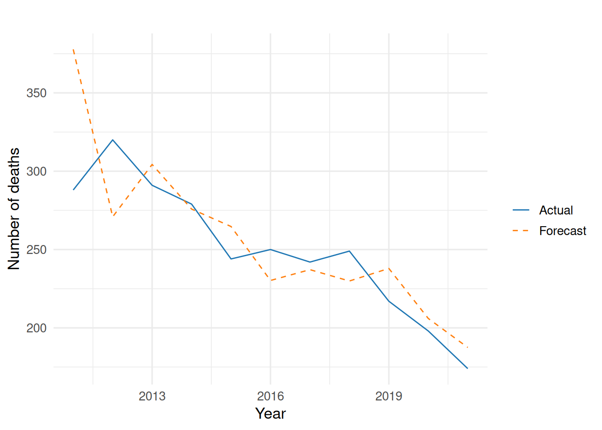
To finally determine that the model does not predict correctly the test values, we check the error measures:
Model ME RMSE MPE MAE MAPE
1 ARIMA(0,2,1) -68.47054 70.10365 -28.7617 68.47054 28.7617
The ARIMA(\(0,2,1\)) model produced a Mean Error of \(–0.25\) and a RMSE of \(0.26\) on the log-transformed test set, indicating a mild tendency to overestimate. The MPE and MAPE were \(–4.58\)% and \(4.58\)%, respectively. These values suggest that, on average, the model overpredicts tuberculosis deaths by approximately \(4.6\)%.
Now, we do the same analysis for the ARIMA(\(0,1,0\)).
The model has predicted a constant line, indicating that it is not a good model for the data. To assess formally this fact, we study the error measures on the test set.
Model ME RMSE MPE MAE MAPE
1 ARIMA(0,1,0) -141.8182 147.6396 -61.32746 141.8182 61.32746
The ARIMA(\(0,1,0\)) model yields relatively poor forecast performance, with a high RMSE of \(0.49\) and a MAPE of \(8.52\)% on the log-transformed test set. The negative ME and MPE values indicate a consistent overestimation of tuberculosis deaths, suggesting that the model fails to adequately capture the underlying downward trend.
The final conclusion is that the current models are too simple to forecast this series. We will now manually select another model and examine whether a more complex model can predict the series more accurately.
We will use the try_all_arima function. We choose a 1 order difference, as the series showed stationarity after the differencing.
The function shows that the two models with the smallest AIC is the ARIMA(\(2,1,2\)).
We check the residuals of the models:
Ljung-Box test
data: Residuals from ARIMA(2,1,2)
Q* = 3.9273, df = 6, p-value = 0.6865
Model df: 4. Total lags used: 10
Shapiro-Wilk normality test
data: residuals(fit_spain_212)
W = 0.94445, p-value = 0.008611
The residuals of the ARIMA(\(2,1,2\)) satisfy both hypothesis of normality and no autocorrelation left.
Now, we begin the forecast:
Time Series:
Start = 2011
End = 2021
Frequency = 1
[1] 5.963683 5.905125 5.897868 5.839725 5.832786 5.775054 5.768429 5.711104
[9] 5.704788 5.647867 5.641857
The plot shows how a higher order of the parameters, starts to capture the oscillating behavior of the series. Let’s check the error measures of the test data:
Model ME RMSE MPE MAE MAPE
1 ARIMA(2,1,2) -78.50731 80.62235 -33.10781 78.50731 33.10781
The ARIMA(\(2,1,2\)) model exhibits a slight overestimation bias but maintains moderate error magnitude (RMSE = \(0.296\), MAE = \(0.282\)) on the log scale. Its MPE of \(–5.17\)% and MAPE of \(5.17\)% indicate forecasts deviate by just over \(5\)% from actual values, reflecting a reasonable balance between accuracy and complexity.
Finally, we can plot the predicted values versus the real values, on the logarithmic scale.
Final conclusions
Let’s do a summary of the Spain models applied; we are going to change the scale into the original one.
Model ME RMSE MPE MAE MAPE
1 ARIMA(0,2,1) -68.47054 70.10365 -28.76170 68.47054 28.76170
2 ARIMA(2,1,2) -78.50731 80.62235 -33.10781 78.50731 33.10781
The out‐of‐sample comparison on the original (untransformed) scale shows that ARIMA(\(0,2,1\)) achieves the lowest overall error among the three candidates. Specifically, its RMSE of \(70.10\) and MAE of \(68.47\) indicate smaller average forecast deviations compared to ARIMA(0,1,0) (RMSE = \(147.64\), MAE = \(141.82\)) and ARIMA(2,1,2) (RMSE = \(80.62\), MAE = \(78.51\)). In percentage terms, ARIMA(\(0,2,1\)) yields a MAPE of \(28.76\)%, which is nearly half of ARIMA(\(0,1,0\))’s \(61.33\)% and substantially better than ARIMA(\(2,1,2\))’s \(33.11\)%. Although all three models exhibit a modest overestimation bias (negative ME and MPE), ARIMA(\(0,2,1\)) overpredicts by an average of only \(68\) deaths (\(–28.76\)% relative bias), whereas ARIMA(\(0,1,0\)) and ARIMA(\(2,1,2\)) overestimate by \(142\) (\(–61.33\)%) and \(79\) (\(–33.11\)%) deaths, respectively.
Taken together, these results demonstrate that ARIMA(\(0,2,1\)) best balances predictive accuracy for tuberculosis mortality in Spain. Consequently, ARIMA(\(0,2,1\)) is the preferred model for forecasting this series.
Although ARIMA(\(0,2,1\)) achieved the lowest numerical errors, its fitted trajectory clearly overestimates the true decline in TB deaths (see the plot). However, because the forecast curve from ARIMA(\(0,2,1\)) decays too gradually and remains well above the actual values after 2015, it fails to capture the accelerated drop in mortality.
In light of this discrepancy between numerical error metrics and visual fit, ARIMA(\(0,2,1\)) does not adequately reproduce the sharp downturn observed in the test period. Therefore, despite its lower AIC and error measures, ARIMA(\(0,2,1\)) is not optimal.
The Netherlands
We study the Netherlands.
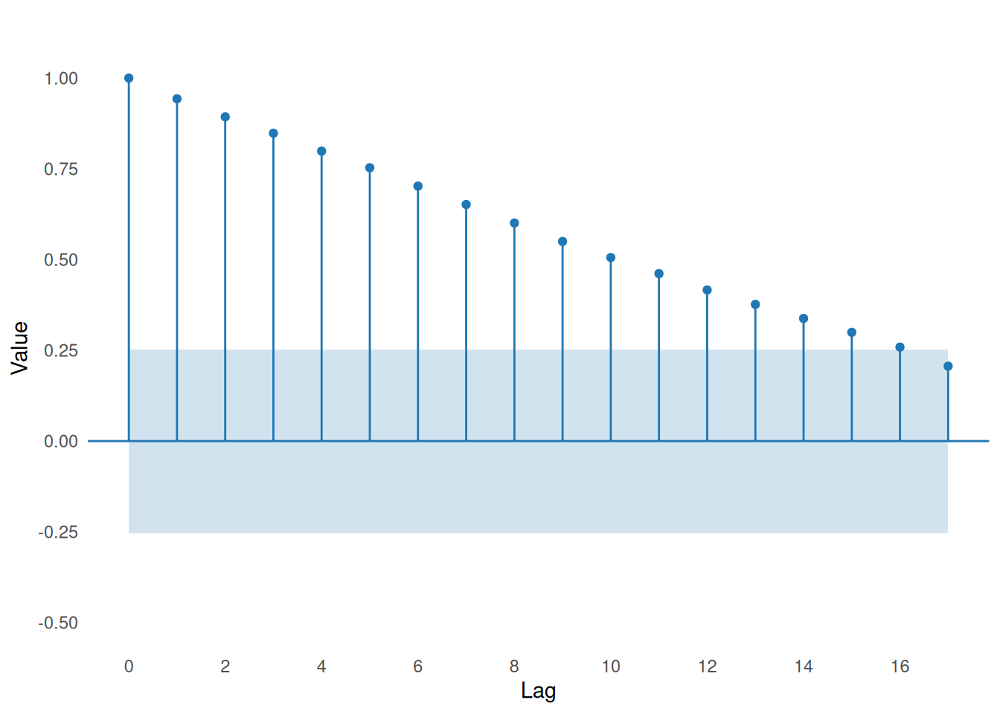
ACF and PACF fo the log-transformed series.
ADF test to study stationarity.
Augmented Dickey-Fuller Test
data: train_netherlands
Dickey-Fuller = -3.0904, Lag order = 3, p-value = 0.1338
alternative hypothesis: stationary
The training series is not stationary.
After apply a first order difference, the series ACF plot shows a significant spike at lag 4, and the PACF plot shows significant spikes at lags 4 and 7. We will begin studying the simplest model and the autogenerate model of auto.arima().
Series: train_netherlands
ARIMA(0,1,0) with drift
Coefficients:
drift
-0.0595
s.e. 0.0205
sigma^2 = 0.02575: log likelihood = 25.15
AIC=-46.3 AICc=-46.09 BIC=-42.11
Training set error measures:
ME RMSE MAE MPE MAPE MASE
Training set 0.0001249287 0.1578122 0.1169041 0.04802681 2.309951 0.8611639
ACF1
Training set -0.07012464
Ljung-Box test
data: Residuals from ARIMA(0,1,0) with drift
Q* = 18.316, df = 10, p-value = 0.04986
Model df: 0. Total lags used: 10
Shapiro-Wilk normality test
data: residuals(fit_netherlands_auto)
W = 0.95154, p-value = 0.01708
The residuals for the autogenerate model do not satisfy the hypothesis.
We have seen that these models do not fit well the testing data. However, the ARIMA(4,1,3) seems to have cached some of the trend of the series. We propose to study a higher model, based on the ACF and PACF: an ARIMA(7,1,3).
Let’s do a summary of the Netherlands models applied; we are going to change the scale into the original one.
Model ME RMSE MPE MAE MAPE
1 ARIMA(0,1,0) -8.534281 9.64701 -32.44534 8.905319 33.60484
2 ARIMA(4,1,3) -12.316992 12.94797 -47.98934 12.316992 47.98934
3 ARIMA(7,1,3) -11.248034 12.05603 -43.72985 11.248034 43.72985
Among the three ARIMA specifications, the simplest model—ARIMA(0,1,0)—actually yields the lowest forecast errors on the original scale. It has an RMSE of 9.65 and an MAE of 8.91, with a MAPE of 33.60%, indicating that its predictions are off by roughly one‐third on average. In contrast, ARIMA(4,1,3) shows considerably higher error (RMSE = 12.95, MAE = 12.32, MAPE = 47.99%) and a larger overprediction bias (ME = –12.32, MPE = –47.99%), while ARIMA(7,1,3) falls between the two (RMSE = 12.06, MAE = 11.25, MAPE = 43.73%). Thus, despite its simplicity, ARIMA(0,1,0) best balances bias and precision for forecasting TB deaths in the Netherlands.
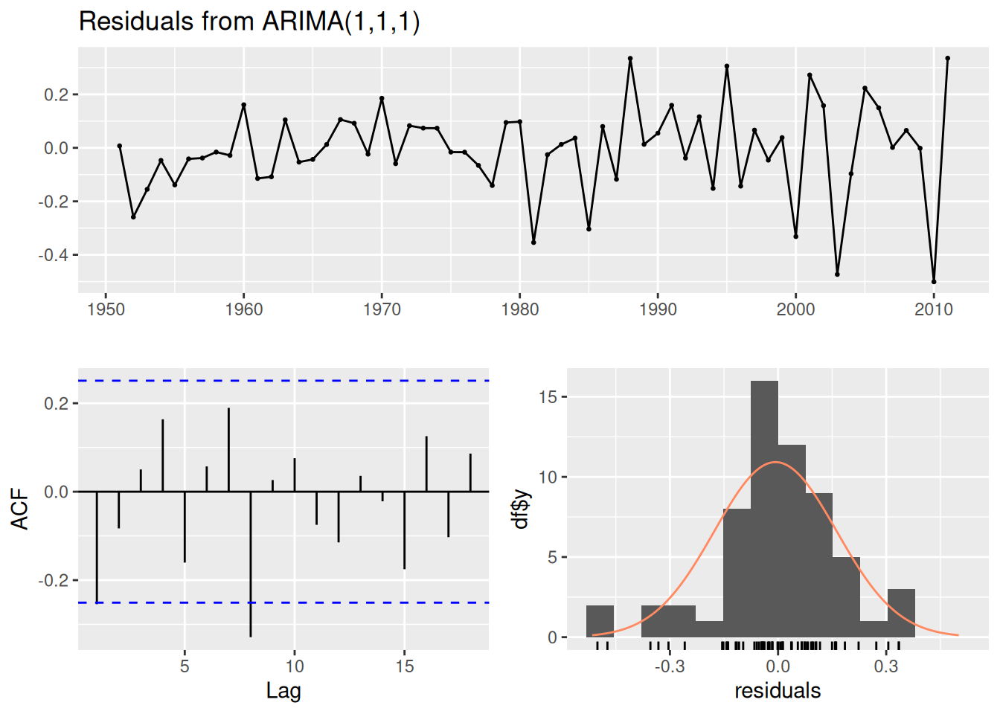
However, despite its lower numerical error metrics, the ARIMA(0,1,0) curve (purple dashed line) clearly fails to follow the actual year‐to‐year fluctuations in TB deaths. It smooths the decline too uniformly, missing the mid‐series uptick around test year 10 and exaggerating death counts early on. In contrast, both ARIMA(4,1,3) (red) and ARIMA(7,1,3) (green) better capture the changing slope and occasional rebounds, demonstrating that a slightly more complex ARIMA structure more faithfully reproduces the true dynamics.
Bulgaria
Now, we study Bulgaria data. As seen in the introduction, Bulgaria has a different trend for number_deaths series.
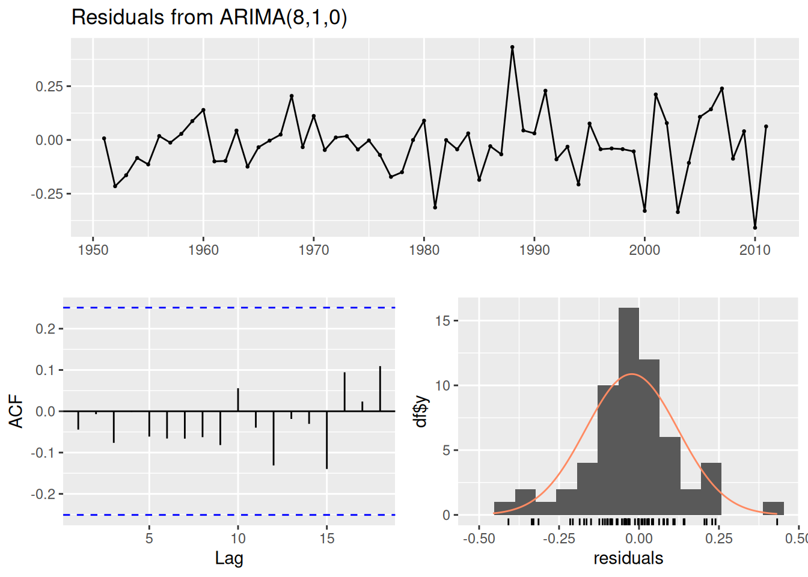
We will work with the logarithmic data. We check both ACF and PACF plots:
The ACF shows an exponential decay, while the PACF shows a single significant spike at lag 1. This suggest an AR(\(1\)) process. However, the series is not stationary (as seen in the plot, and justified by the ADF test, with a \(p\)-value of 0.05173).
Augmented Dickey-Fuller Test
data: train_bulgaria
Dickey-Fuller = -2.1424, Lag order = 3, p-value = 0.5173
alternative hypothesis: stationary
Let’s see which ARIMA order proposes the auto.arima() function.
Series: train_bulgaria
ARIMA(0,1,0) with drift
Coefficients:
drift
-0.0409
s.e. 0.0147
sigma^2 = 0.01038: log likelihood = 41.16
AIC=-78.32 AICc=-78.05 BIC=-74.62
Training set error measures:
ME RMSE MAE MPE MAPE MASE
Training set 0.0001478023 0.09973848 0.07737386 0.001195524 1.32575 0.8967336
ACF1
Training set 0.07537416
The model proposed is an ARIMA(0,1,0) with drift. We need to further study the residuals of the model.
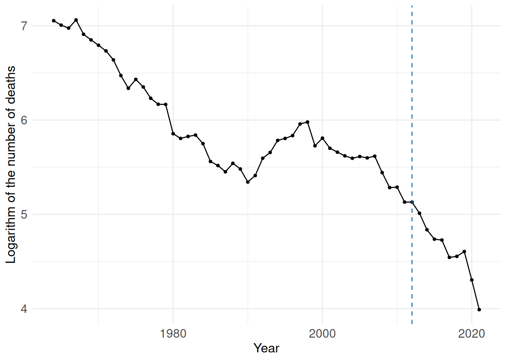
Ljung-Box test
data: Residuals from ARIMA(0,1,0) with drift
Q* = 5.4184, df = 10, p-value = 0.8615
Model df: 0. Total lags used: 10
Shapiro-Wilk normality test
data: residuals(fit_bulgaria_auto)
W = 0.98861, p-value = 0.9188
The residuals seem to pass both Ljung-Box test and Shapiro-Wilk normality test. Now, we can forecast.
Model ME RMSE MPE MAE MAPE
1 ARIMA(0,1,0) -0.2612071 0.3328491 -5.963978 0.269393 6.12355
The ARIMA(\(0,1,0\)) model yields a modest overprediction bias (ME = \(–0.26\)) and low forecast error (RMSE = \(0.33\), MAE = \(0.27\)) on the log‐scale. Its MPE of \(–5.96\)% and MAPE of \(6.12\)% indicate that, on average, predictions are about 6% higher than actual values, reflecting a relatively accurate fit.
Finally, we can plot the predicted values versus the real values, on the logarithmic scale.
The ARIMA(0,1,0) model does capture the overall downward trend, but as the plot shows, its forecasts remain too flat and consistently overestimate actual values. To improve accuracy, we will explore an AR(1) structure: the ACF/PACF of the series both suggest a significant lag‐1 dependence, so fitting ARIMA(1,1,0) may better track the curvature in the decline.
Series: train_bulgaria
ARIMA(1,1,0)
Coefficients:
ar1
0.1998
s.e. 0.1448
sigma^2 = 0.01161: log likelihood = 38.51
AIC=-73.01 AICc=-72.74 BIC=-69.31
Training set error measures:
ME RMSE MAE MPE MAPE MASE
Training set -0.03256068 0.105491 0.08052408 -0.5535922 1.37339 0.9332435
ACF1
Training set -0.1126777
The AIC has a value of \(-73.01\), meaning it could be a good fit. We check the residuals:
Ljung-Box test
data: Residuals from ARIMA(1,1,0)
Q* = 4.9885, df = 9, p-value = 0.8353
Model df: 1. Total lags used: 10
Shapiro-Wilk normality test
data: residuals(fit_bulgaria_110)
W = 0.97825, p-value = 0.508
The residuals seem to pass both Ljung-Box test and Shapiro-Wilk normality test. Now, we can forecast.
Let’s check the error measures of the logarithmic test data:
Model ME RMSE MPE MAE MAPE
1 ARIMA(1,1,0) -0.4477553 0.5461903 -8.334346 0.4540849 10.28914
The ARIMA(\(1,1,0\)) fit still shows a slight overprediction bias (ME = –0.45) but achieves a lower RMSE (0.55) and MAE (0.45) than the (0,1,0) model. Its MPE of –8.33% and MAPE of 10.29% indicate that forecasts now overshoot actual log‐deaths by about 8%, yielding around a 10% average percentage error—an improvement over the simpler differenced‐white‐noise model.
Finally, we can plot the predicted values versus the real values, on the logarithmic scale.
Even with the ARIMA(\(1,1,0\)) specification, the model still fails to track the path of actual values. To address this, we will employ our try_all_arima routine to explore higher‐order combinations of \(p\), \(d\), and \(q\) and identify a more flexible ARIMA structure.
Model ME RMSE MPE MAE MAPE
1 ARIMA(2,1,3) -0.2971004 0.4254534 -6.892946 0.3239278 7.419726
The ARIMA(\(2,1,3\)) model shows a modest overprediction bias (ME = –0.30) and improved overall accuracy (RMSE = 0.43, MAE = 0.32) compared to lower‐order specifications. Its MPE of –6.89% and MAPE of 7.42% indicate that forecasts tend to overshoot by roughly 6.9%, with an average percentage error of about 7.4%, reflecting a noticeably tighter fit to the observed log‐deaths series.
Finally, we can plot the predicted values versus the real values, on the logarithmic scale.
Final conclusions
Let’s do a summary of the Bulgarian models applied; we are going to change the scale into the original one.
Model ME RMSE MPE MAE MAPE
1 ARIMA(0,1,0) -26.96843 32.08783 -32.80453 28.32392 33.60660
2 ARIMA(1,1,0) -53.70719 62.47486 -64.71909 54.76014 65.34214
3 ARIMA(2,1,3) -31.08017 43.21817 -41.48721 35.29090 44.06939
Among the three candidates, ARIMA(0,1,0) delivers the best out‐of‐sample performance, with the lowest RMSE (32.09), MAE (28.32), and MAPE (33.61%), despite a moderate overestimation bias (ME = –26.97, MPE = –32.80%). In contrast, ARIMA(1,1,0) exhibits much larger forecast errors (RMSE = 62.47, MAE = 54.76, MAPE = 65.34%), and ARIMA(2,1,3) sits in between (RMSE = 43.22, MAE = 35.29, MAPE = 44.07%). Thus, the simple differenced‐white‐noise model (0,1,0) most consistently tracks actual TB‐death counts on the original scale.
Estonia
Now, we study Estonia data.
region_code region_name subregion country_code country_name year
1 EU Europe E EST Estonia 1981
2 EU Europe E EST Estonia 1982
3 EU Europe E EST Estonia 1985
4 EU Europe E EST Estonia 1986
5 EU Europe E EST Estonia 1987
6 EU Europe E EST Estonia 1988
7 EU Europe E EST Estonia 1989
8 EU Europe E EST Estonia 1990
9 EU Europe E EST Estonia 1991
10 EU Europe E EST Estonia 1992
11 EU Europe E EST Estonia 1993
12 EU Europe E EST Estonia 1994
13 EU Europe E EST Estonia 1995
14 EU Europe E EST Estonia 1996
15 EU Europe E EST Estonia 1997
16 EU Europe E EST Estonia 1998
17 EU Europe E EST Estonia 1999
18 EU Europe E EST Estonia 2000
19 EU Europe E EST Estonia 2001
20 EU Europe E EST Estonia 2002
21 EU Europe E EST Estonia 2003
22 EU Europe E EST Estonia 2004
23 EU Europe E EST Estonia 2005
24 EU Europe E EST Estonia 2006
25 EU Europe E EST Estonia 2007
26 EU Europe E EST Estonia 2008
27 EU Europe E EST Estonia 2009
28 EU Europe E EST Estonia 2010
29 EU Europe E EST Estonia 2011
number_deaths percent_cause_specific_death_rate age_death_rate death_rate
1 99 0.5395389 5.629188 6.684673
2 105 0.5868217 5.896735 7.049819
3 96 0.4963036 5.070517 6.319947
4 73 0.4058712 3.828511 4.765013
5 63 0.3446578 3.233547 4.073715
6 81 0.4366341 4.160213 5.193639
7 54 0.2913250 2.925148 3.443590
8 69 0.3532845 3.717204 4.397218
9 69 0.3499873 3.683111 4.419354
10 78 0.3875584 4.173912 5.087761
11 105 0.4932820 5.570508 7.027510
12 143 0.6437962 7.679317 9.777684
13 154 0.7393893 8.812668 10.719501
14 148 0.7781283 8.403848 10.454975
15 148 0.7971561 8.502354 10.574941
16 145 0.7456546 8.896536 10.460583
17 149 0.8074130 8.421116 10.831212
18 106 0.5759930 6.342114 7.587769
19 99 0.5346727 5.278363 7.131974
20 88 0.4794334 5.099150 6.379817
21 95 0.5233583 5.481386 6.930664
22 100 0.5654510 5.670047 7.339180
23 51 0.2945253 2.801189 3.764463
24 67 0.3869254 3.744848 4.974718
25 63 0.3618818 3.403560 4.699108
26 55 0.3298351 2.917253 4.113410
27 49 0.3043667 2.384792 3.671746
28 41 0.2598061 2.017521 3.079292
29 45 0.2959747 2.191062 3.389986
population gdp_capita
1 1485343 NA
2 1494911 NA
3 1525281 NA
4 1535594 NA
5 1547259 NA
6 1559099 NA
7 1567590 NA
8 1570310 NA
9 1565380 NA
10 1540213 NA
11 1504344 2685.909
12 1475716 2819.126
13 1452776 3134.390
14 1434655 3380.926
15 1421494 3682.952
16 1411206 4093.392
17 1403579 4140.937
18 1397001 4070.609
19 1388174 4505.858
20 1379438 5341.629
21 1370849 7203.523
22 1362682 8914.104
23 1354847 10412.644
24 1346884 12639.400
25 1340709 16744.584
26 1337078 18204.966
27 1334528 14711.735
28 1331450 14663.045
29 1327366 17487.805
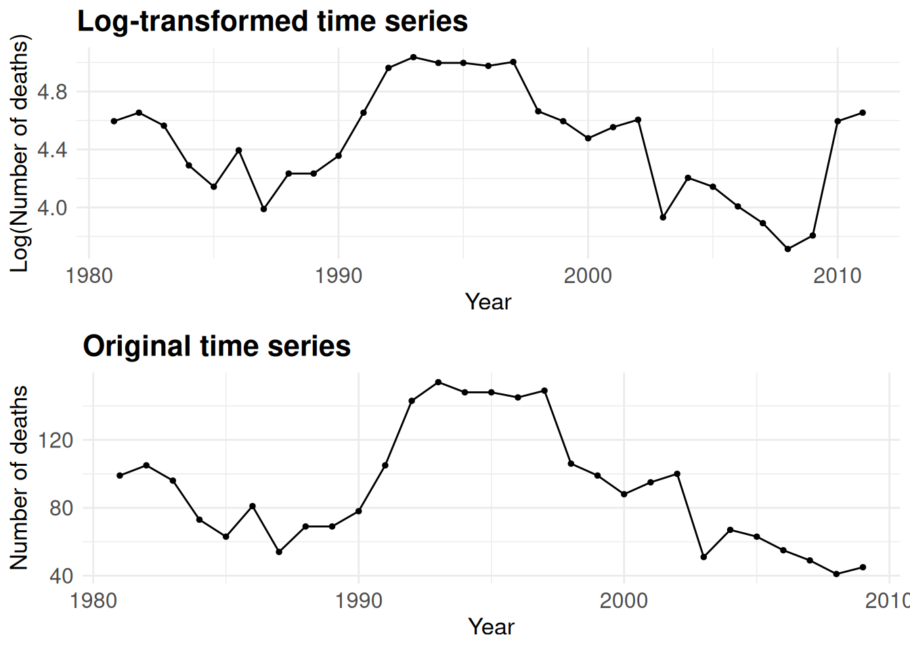
In order to stabilize the variance of the series, we will work with the logarithmic data.
Augmented Dickey-Fuller Test
data: train_estonia
Dickey-Fuller = -2.1342, Lag order = 3, p-value = 0.5211
alternative hypothesis: stationary
The \(p\)-value of the ADF test is higher than \(0,05\), so the series is non-stationary. We check both ACF and PACF plots.
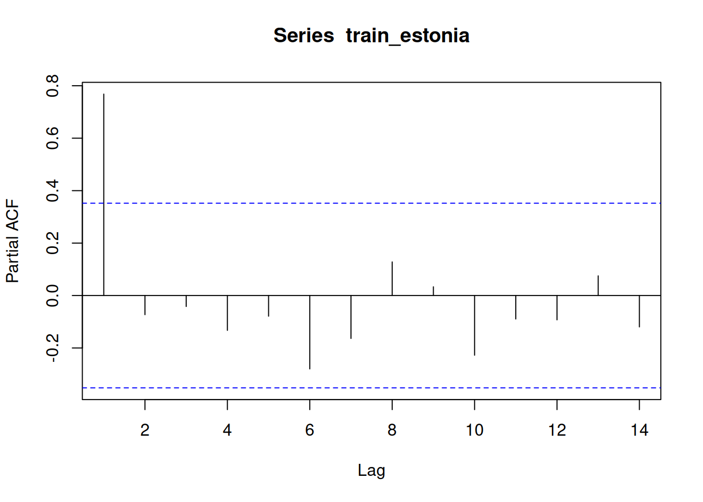
The ACF shows an exponential decay, while the PACF shows a single significant spike at lag 1. This suggest an AR(\(1\)) process. However, the series is not stationary (as seen in the plot, and justified by the ADF test, with a \(p\)-value of \(0.543\)).
Let’s see which ARIMA order proposes the auto.arima() function.
Series: train_estonia
ARIMA(1,0,0) with non-zero mean
Coefficients:
ar1 mean
0.7566 4.4785
s.e. 0.1086 0.1613
sigma^2 = 0.06084: log likelihood = 0.01
AIC=5.97 AICc=6.86 BIC=10.27
Training set error measures:
ME RMSE MAE MPE MAPE MASE
Training set -0.004146472 0.2385708 0.1852981 -0.4067951 4.277218 1.030578
ACF1
Training set 0.0736098
The model proposed is an ARIMA(1,0,0) with non-zero mean. We need to further study the residuals of the model.
Ljung-Box test
data: Residuals from ARIMA(1,0,0) with non-zero mean
Q* = 1.1115, df = 5, p-value = 0.9531
Model df: 1. Total lags used: 6
Shapiro-Wilk normality test
data: residuals(fit_estonia_auto)
W = 0.96119, p-value = 0.3137
The residuals seem to pass both Ljung-Box test and Shapiro-Wilk normality test. Now, we can forecast.
Model ME RMSE MPE MAE MAPE
1 ARIMA(1,0,0) -1.609447 1.65553 -58.46415 1.609447 58.46415
The model seems to have cached the declining trend; however it overestimates the values. Let’s propose a different model. Based on the ADF test, the log-transformed series is not stationary. We begin by checking the ACF and PACF plots of the differenced time series.
Augmented Dickey-Fuller Test
data: train_estonia %>% diff()
Dickey-Fuller = -1.8064, Lag order = 3, p-value = 0.647
alternative hypothesis: stationary
Once differenced, the time series does not present any temporal structure left. We study the ARIMA(0,1,0).
Series: train_estonia
ARIMA(0,1,0)
sigma^2 = 0.06583: log likelihood = -1.76
AIC=5.52 AICc=5.66 BIC=6.92
Training set error measures:
ME RMSE MAE MPE MAPE MASE
Training set 0.00204631 0.2523997 0.1741485 -0.1289093 4.029889 0.9685663
ACF1
Training set -0.05117422
Let’s check the residuals of the model
Ljung-Box test
data: Residuals from ARIMA(0,1,0)
Q* = 0.70501, df = 6, p-value = 0.9944
Model df: 0. Total lags used: 6
Shapiro-Wilk normality test
data: residuals(fit_estonia_010)
W = 0.93813, p-value = 0.07325
The residuals seem to pass both Ljung-Box test and Shapiro-Wilk normality test. Now, we can forecast.
Notice that the model has predicted the same value for all years; that is, a constant line. This means that the model does not have fully understood the structure of the series.
We can plot the results to confirm this behavior:
ARIMA step by step
h_test <-length(test_estonia)one_step_fc_arima <-numeric(h_test)serie_rolling <- train_estoniafor(i inseq_len(h_test)){ fit_tmp <-Arima(serie_rolling, order =c(1,1,0)) fc_tmp <-forecast(fit_tmp, h =1, level =95) one_step_fc_arima[i] <- fc_tmp$mean serie_rolling <-c(serie_rolling, test_estonia[i])#cat(sprintf("Iter %02d | pred = %.4f | real = %.4f\n", #i, one_step_fc_arima[i], test_spain[i]))}one_step_fc_arima_ts <-ts(one_step_fc_arima,start =start(test_estonia),frequency =frequency(test_estonia))plot_estonia <-data.frame(Year =seq_along(test_estonia),Actual =exp(test_estonia),Predicted_021 =exp(one_step_fc_arima_ts))ggplot(plot_estonia, aes(x = Year)) +geom_line(aes(y = Actual, color ="Actual")) +geom_line(aes(y = Predicted_021, color ="Predicted_021"), linetype ="dashed") +scale_color_manual(values =c("Actual"="#1f77b4", "Predicted_021"="#ff7f0e")) +labs(title ="Actual vs Predicted TB deaths (logarithmic scale)",x ="Year (Test Set)",y ="Number of Deaths",color ="Legend") +theme_minimal()
ARIMAX models
We have seen that ARIMA models are quite simple in order to do a well-suited forecast for our studied series. In this section we will study ARIMAX models; ARIMAX models are ARIMA models that include some exogenous variables in order to get better forecastings rather than basic ARIMA. In our study, we will consider two exogenous variables: Gross Domestic Product per capita and the country population.
First, we visualize these series.
We begin analysing the Population variable.
In stark contrast with the other countries, Spain population has a strong increasing trend, climbing from around 28 million in 1950 to nearly 48 million by 2020. The Netherlands also grows steadily, from about 10 million to roughly 18 million. Sweden’s population increases more modestly, moving from approximately 7 million to just over 10 million, while Switzerland rises from about 5 million to nearly 9 million over the same period.
In contrast, Bulgaria peaks near 9 million in the 1980s before gradually declining to about 7 million by 2020, and Estonia remains the smallest, hovering around 1.7 million in 1980 but falling slightly to around 1.3 million by 2020. The plot clearly highlights Spain’s large and sustained growth, moderate increases for Northern and Western European countries, and population declines in Eastern Europe.
Now, let’s visualize the GDP per capita tendencies:
Now, the outlook is quite different; Switzerland leads the list, climbing from around $2,000 in 1960 to over $90,000 by 2020, with sharp surges in the late 1990s and post-2005. Following Switzerland, the Netherlands and Sweden follow a similar upward trajectory. Spain increases more modestly, from under $1,000 to a peak of around $35,000 by 2008, then levels out in the $25,000–$30,000 range.Estonia lags until independence—remaining near zero through the Soviet era—then surges after 1992 from around $2,000 to approximately $25,000 by 2020. Bulgaria also starts below $1,000, grows gradually through the 1980s, dips in the 1990s, and then climbs to roughly $12,000 by 2020.
Overall, Switzerland, Sweden, and the Netherlands display long-term, high-income growth; Spain shows moderate growth with a plateau post-2008; and the Eastern European countries (Estonia and Bulgaria) demonstrate rapid catch-up following post-1990 transitions.
Before beginning the ARIMAX section, it is important to give special attention to the length of each of the variables, just to ensure that the studied variable (number_deaths) length coincides with the covariables length.
Now, we need to divide these new series into a training and a testing set. We will do the split, ensuring that the 80% of the data is used for training.
Now that we have prepared the dataset, we can begin the ARIMAX study.
Spain
We begin studying Spain data. First, let’s plot all three variables (number_deaths, population and gdp_capita) in the same plot.
Series: train_spain_short
Regression with ARIMA(2,0,0) errors
Coefficients:
ar1 ar2 intercept population gdp_capita
0.6342 0.3226 107.2013 -5.6847 -0.0800
s.e. 0.1383 0.1435 17.9677 1.0557 0.0835
sigma^2 = 0.005923: log likelihood = 58.76
AIC=-105.51 AICc=-103.56 BIC=-94.04
Training set error measures:
ME RMSE MAE MPE MAPE MASE
Training set -0.008574922 0.07301075 0.05837411 -0.1222844 0.8471575 0.7428673
ACF1
Training set 0.04935634
Ljung-Box test
data: Residuals from Regression with ARIMA(2,0,0) errors
Q* = 6.8514, df = 8, p-value = 0.5527
Model df: 2. Total lags used: 10
Shapiro-Wilk normality test
data: residuals(fit_arimax_spain)
W = 0.99459, p-value = 0.9982
The residuals of the ARIMAX model satisfy both normality and non autocorrelation hypothesis. Now, we begin the forecast:
Let’s plot the predicted versus the actual logarithmic values:
Finally, we can check the error measures in order to analyze the accuracy of the model.
Model ME RMSE MPE MAE MAPE
1 ARIMAX(2,0,0) -0.3571163 0.4043032 -6.572602 0.368348 6.760698
The ARIMAX(2,0,0) model exhibits a slight overestimation bias (ME = \(–0.36\)) and moderate overall error (RMSE = \(0.40\), MAE = \(0.37\)) on the log‐transformed series. Its MPE of \(–6.57\)% and MAPE of \(6.76\)% indicate that, on average, forecasts overshoot actual logarithmic values by around \(6.8\)%, suggesting that while the exogenous variables help, there remains room for improvement in capturing the downward trajectory of TB deaths.
In order to improve our ARIMAX model beyond what auto.arima() suggested, we will now inspect each differenced series manually (the response and both regressors) and choose orders \(p\) and \(q\) based on the ACF/PACF patterns, rather than relying on automatic selection. Recall that all three series (log(number_deaths), log(population) and log(gdp_capita)) are non‐stationary, so we first take first differences.
The ACF plot shows a large, significant spike at lag 1, and then quickly dies off. In the same way, the PACF plot shows a significant spike at lag 1, with all higher partial autocorrelations inside the confidence bounds. These patterns suggest an ARIMA(\(p,1,q\)) where one of \(p\) or \(q\) should be 1.
Next, we difference the log(population) series over the same short training period:
TH ACF plot shows a slow exponential decay over the first few lags. In contrast, the PACF shows a single large spike at lag 1, and then subsequent lags are essentially within the confidence bounds. This pattern is characteristic of an AR(\(1\)) process.
Finally, we difference the log(gdp_capita) series:
The ACF plot shows a large spike at lag 1 and smaller but non-negligible negative values at lags 3-7 and 9-11. On the other hand, the PACF also shows a strong negative spike at lag 5, and samller spikes between lags 6 and 15, but the dominant feature is the large positive spike at lag 1.
This may suggest that the series may require both an AR(\(1\)) and possibly an MA component to capture the very strong lag-1 autocorrelation.
Putting all together, we propose the ARIMA(\(1,1,1\)).
Let’s plot the predicted versus the actual logarithmic values:
Finally, we can check the error measures in order to analyze the accuracy of the model.
Model ME RMSE MPE MAE MAPE
1 ARIMAX(1,1,1) -0.348575 0.3964638 -6.418005 0.3619036 6.641217
The ARIMAX(\(1,1,1\)) model yields a small overestimation bias (ME = \(–0.35\)) and moderate error magnitude (RMSE = \(0.396\), MAE = \(0.362\)) on the log‐transformed series. Its MPE of \(–6.42\)% and MAPE of \(6.64\)% indicate that forecasts tend to overshoot actual values by roughly \(6.6\)%, reflecting improved but still imperfect tracking of the downward TB‐death trend.
Final conclusions
Let’s do a summary of the Spain models applied; we are going to change the scale into the original one.
Model ME RMSE MPE MAE MAPE
1 ARIMA(2,0,0) -104.6952 116.4516 -45.41260 108.9530 46.49876
2 ARIMA(1,1,1) -101.5713 113.5724 -44.15437 106.5926 45.43533
The out‐of‐sample comparison on the original scale shows that ARIMA(\(1,1,1\)) slightly outperforms ARIMA(\(2,0,0\)). Although both models exhibit a modest overestimation bias (ME ≈ \(–105\) for (2,0,0) versus \(–102\) for (1,1,1)), ARIMA(\(1,1,1\)) achieves a lower RMSE (\(113.57\) vs. \(116.45\)), a lower MAE (\(106.59\) vs. \(108.95\)), and a lower MAPE (\(45.44\)% vs. \(46.50\)%). In percentage terms, ARIMA(\(1,1,1\)) also has a smaller average bias (\(–44.15\)% vs. \(–45.41\)%). Taken together, these results indicate that ARIMA(\(1,1,1\)) provides a marginally better fit to the actual TB‐death trajectory than ARIMA(\(2,0,0\)), making it the preferred model for forecasting.
Finally, we plot both approaches for the test set.
The Netherlands
Let’s continue with the Netherlands.
region_code region_name subregion country_code country_name year
1 EU Europe W NLD Netherlands 1960
2 EU Europe W NLD Netherlands 1961
3 EU Europe W NLD Netherlands 1962
4 EU Europe W NLD Netherlands 1963
5 EU Europe W NLD Netherlands 1964
6 EU Europe W NLD Netherlands 1965
7 EU Europe W NLD Netherlands 1966
8 EU Europe W NLD Netherlands 1967
9 EU Europe W NLD Netherlands 1968
10 EU Europe W NLD Netherlands 1969
11 EU Europe W NLD Netherlands 1970
12 EU Europe W NLD Netherlands 1971
13 EU Europe W NLD Netherlands 1972
14 EU Europe W NLD Netherlands 1973
15 EU Europe W NLD Netherlands 1974
16 EU Europe W NLD Netherlands 1975
17 EU Europe W NLD Netherlands 1976
18 EU Europe W NLD Netherlands 1977
19 EU Europe W NLD Netherlands 1978
20 EU Europe W NLD Netherlands 1979
21 EU Europe W NLD Netherlands 1980
22 EU Europe W NLD Netherlands 1981
23 EU Europe W NLD Netherlands 1982
24 EU Europe W NLD Netherlands 1983
25 EU Europe W NLD Netherlands 1984
26 EU Europe W NLD Netherlands 1985
27 EU Europe W NLD Netherlands 1986
28 EU Europe W NLD Netherlands 1987
29 EU Europe W NLD Netherlands 1988
30 EU Europe W NLD Netherlands 1989
31 EU Europe W NLD Netherlands 1990
32 EU Europe W NLD Netherlands 1991
33 EU Europe W NLD Netherlands 1992
34 EU Europe W NLD Netherlands 1993
35 EU Europe W NLD Netherlands 1994
36 EU Europe W NLD Netherlands 1995
37 EU Europe W NLD Netherlands 1996
38 EU Europe W NLD Netherlands 1997
39 EU Europe W NLD Netherlands 1998
40 EU Europe W NLD Netherlands 1999
41 EU Europe W NLD Netherlands 2000
42 EU Europe W NLD Netherlands 2001
43 EU Europe W NLD Netherlands 2002
44 EU Europe W NLD Netherlands 2003
45 EU Europe W NLD Netherlands 2004
46 EU Europe W NLD Netherlands 2005
47 EU Europe W NLD Netherlands 2006
48 EU Europe W NLD Netherlands 2007
49 EU Europe W NLD Netherlands 2008
50 EU Europe W NLD Netherlands 2009
51 EU Europe W NLD Netherlands 2010
number_deaths percent_cause_specific_death_rate age_death_rate death_rate
1 325 0.37148801 2.7437928 2.8293838
2 316 0.35940539 2.6297084 2.7150799
3 296 0.31638128 2.4116499 2.5072634
4 251 0.26218480 1.9752148 2.0976099
5 230 0.24615516 1.7631420 1.8965631
6 222 0.22647053 1.6755866 1.8056561
7 187 0.18604003 1.3623827 1.5012484
8 176 0.17636684 1.2627974 1.3970250
9 197 0.18763871 1.4131242 1.5475620
10 167 0.15518283 1.1653621 1.2967852
11 156 0.14231110 1.0424142 1.1964567
12 209 0.18958120 1.3842304 1.5839933
13 206 0.18137635 1.3120618 1.5455487
14 190 0.17166296 1.2158470 1.4137641
15 182 0.16659039 1.1342663 1.3436593
16 199 0.17496505 1.1732114 1.4561473
17 140 0.12231988 0.8452214 1.0164077
18 101 0.09174062 0.5957890 0.7289156
19 173 0.15120395 0.9900729 1.2408817
20 177 0.15724248 0.9938939 1.2608364
21 162 0.14175833 0.8967193 1.1448925
22 178 0.15409254 0.9205673 1.2493683
23 178 0.15179424 0.9172912 1.2436507
24 161 0.13671759 0.8053623 1.1206159
25 166 0.13855040 0.8103940 1.1508437
26 138 0.11246577 0.6859192 0.9522692
27 166 0.13247464 0.7936857 1.1391554
28 157 0.12847896 0.7200449 1.0705689
29 151 0.12161433 0.6912587 1.0230283
30 162 0.12567395 0.7005508 1.0909973
31 136 0.10557039 0.5776036 0.9096077
32 120 0.09233752 0.5196465 0.7963051
33 142 0.10932580 0.5730137 0.9351888
34 172 0.12482311 0.7061930 1.1248888
35 140 0.10489170 0.5524166 0.9101074
36 138 0.10171365 0.5451569 0.8926839
37 127 0.09232268 0.4733110 0.8177457
38 105 0.07732927 0.4079446 0.6726199
39 118 0.08582942 0.4471409 0.7512478
40 120 0.08541716 0.4679117 0.7589125
41 91 0.06475624 0.3458279 0.5714102
42 87 0.06197596 0.3398740 0.5421851
43 72 0.05057778 0.2705021 0.4458500
44 72 0.05072709 0.2610800 0.4437513
45 78 0.05712068 0.2783823 0.4790631
46 70 0.05131890 0.2437266 0.4289213
47 76 0.05614160 0.2558262 0.4649387
48 54 0.04059479 0.1642595 0.3296362
49 51 0.03773976 0.1560307 0.3101135
50 62 0.04618766 0.2073890 0.3750668
51 54 0.03968896 0.1726799 0.3249998
population gdp_capita
1 11486909 1154.687
2 11639371 1252.577
3 11807552 1340.396
4 11969156 1434.776
5 12131887 1665.879
6 12301136 1845.382
7 12464282 1983.351
8 12607834 2151.413
9 12740849 2360.885
10 12890638 2642.956
11 13052082 2927.073
12 13208353 3378.615
13 13342780 4104.451
14 13453743 5345.575
15 13559670 6440.978
16 13680031 7335.509
17 13786640 7925.688
18 13868607 9166.808
19 13953922 11179.390
20 14050176 12798.543
21 14162687 13791.862
22 14262690 11520.448
23 14333902 11072.658
24 14396901 10680.359
25 14462810 9977.160
26 14538958 9926.130
27 14626489 13783.850
28 14724947 16709.560
29 14825916 17744.501
30 14921107 17397.692
31 15030884 21290.860
32 15155091 21732.231
33 15276786 23904.037
34 15389718 23122.411
35 15485453 24646.314
36 15565033 29258.134
37 15640031 29006.809
38 15723620 26700.537
39 15827109 27885.808
40 15940182 28272.643
41 16058758 26214.499
42 16182705 26896.548
43 16288060 29343.245
44 16366914 35750.975
45 16425561 40436.618
46 16465707 41994.714
47 16493851 44900.938
48 16531360 51799.209
49 16597257 57879.944
50 16684147 52722.213
51 16771232 50999.745
Series: train_netherlands_short
Regression with ARIMA(1,0,3) errors
Coefficients:
ar1 ma1 ma2 ma3 intercept population gdp_capita
0.7016 0.1219 -0.2952 0.3542 128.0135 -7.6703 0.3585
s.e. 0.3116 0.3773 0.2773 0.1922 45.5845 2.9216 0.2839
sigma^2 = 0.02116: log likelihood = 28.85
AIC=-41.71 AICc=-38.28 BIC=-26.25
Training set error measures:
ME RMSE MAE MPE MAPE MASE
Training set 0.001004353 0.1351224 0.100776 -0.07734668 2.081566 0.7912956
ACF1
Training set 0.0002817756
Ljung-Box test
data: Residuals from Regression with ARIMA(1,0,3) errors
Q* = 2.1925, df = 6, p-value = 0.9012
Model df: 4. Total lags used: 10
Shapiro-Wilk normality test
data: residuals(fit_arimax_netherlands)
W = 0.96887, p-value = 0.1985
The residuals of the ARIMAX model satisfy both normality and non autocorrelation hypothesis. Now, we begin the forecast:
region_code region_name subregion country_code country_name year
52 EU Europe W NLD Netherlands 2011
53 EU Europe W NLD Netherlands 2012
54 EU Europe W NLD Netherlands 2013
55 EU Europe W NLD Netherlands 2014
56 EU Europe W NLD Netherlands 2015
57 EU Europe W NLD Netherlands 2016
58 EU Europe W NLD Netherlands 2017
59 EU Europe W NLD Netherlands 2018
60 EU Europe W NLD Netherlands 2019
61 EU Europe W NLD Netherlands 2020
62 EU Europe W NLD Netherlands 2021
63 EU Europe W NLD Netherlands 2022
number_deaths percent_cause_specific_death_rate age_death_rate death_rate
52 36 0.02652110 0.10705770 0.21565830
53 34 0.02414550 0.10146269 0.20292496
54 38 0.02690361 0.10500158 0.22613082
55 34 0.02442125 0.10493176 0.20160085
56 36 0.02446749 0.09108133 0.21251571
57 29 0.01946348 0.08098047 0.17028459
58 23 0.01531149 0.06388966 0.13423996
59 28 0.01825734 0.06764129 0.16169636
60 20 0.01316786 0.05504893 0.11453994
61 32 0.01897106 0.07848511 0.18273101
62 20 0.01169782 0.05300926 0.11403392
63 17 0.00999342 0.05317896 0.09607144
population gdp_capita
52 16851061 54230.31
53 16915191 50070.14
54 16967065 52198.90
55 17030087 52900.54
56 17107427 45193.40
57 17204694 46039.11
58 17315375 48675.22
59 17421284 53044.53
60 17537506 52476.27
61 17636732 52162.57
62 17730564 58727.87
63 17904422 57025.01
Let’s plot the predicted versus the actual logarithmic values:
Finally, we can check the error measures in order to analyze the accuracy of the model.
Model ME RMSE MPE MAE MAPE
1 ARIMAX(1,0,3) -0.6625668 0.6952391 -20.5302 0.6625668 20.5302
The ARIMAX(1,0,3) model yields an ME of –0.66 and an RMSE of 0.70 on the log‐scale, indicating a modest overprediction bias and moderate overall error. Its MPE of –20.53% and MAPE of 20.53% show that predicted values typically exceed actual deaths by around 20% on average, reflecting a reasonably accurate but slightly optimistic fit.
Now, let’s try to adjust another ARIMAX model, just to try to improve the error measures. The auto.arima() function does not apply any difference to the series; let’s check the stationarity of the three series.
Augmented Dickey-Fuller Test
data: train_netherlands_short
Dickey-Fuller = -1.6949, Lag order = 3, p-value = 0.697
alternative hypothesis: stationary
Augmented Dickey-Fuller Test
data: train_netherlands_short %>% diff()
Dickey-Fuller = -4.5461, Lag order = 3, p-value = 0.01
alternative hypothesis: stationary
Yet the series is not stationary, when we apply a first order difference it passes the ADF test of stationarity. We an plot the ACf and PACF.
Both the ACF and PACF show a significant spike at lag 2.
Now, we difference the other series.
Augmented Dickey-Fuller Test
data: xreg_netherlands_train$population %>% diff(differences = 2)
Dickey-Fuller = -4.1315, Lag order = 3, p-value = 0.01155
alternative hypothesis: stationary
Augmented Dickey-Fuller Test
data: xreg_netherlands_train$gdp_capita %>% diff(differences = 2)
Dickey-Fuller = -3.8721, Lag order = 3, p-value = 0.02247
alternative hypothesis: stationary
fit_arimax_netherlands_222 <-Arima(train_netherlands_short, order =c(2,2,2), xreg =as.matrix(xreg_netherlands_train))summary(fit_arimax_netherlands_222)
Series: train_netherlands_short
Regression with ARIMA(2,2,2) errors
Coefficients:
ar1 ar2 ma1 ma2 population gdp_capita
-0.6994 -0.4729 -0.4380 -0.5620 -2.3486 0.2238
s.e. 0.2433 0.1262 0.2959 0.2896 4.7852 0.1876
sigma^2 = 0.02264: log likelihood = 24
AIC=-33.99 AICc=-31.26 BIC=-20.75
Training set error measures:
ME RMSE MAE MPE MAPE MASE
Training set 0.004383266 0.1381758 0.1041745 0.007764012 2.142461 0.8179813
ACF1
Training set -0.04055321
Ljung-Box test
data: Residuals from Regression with ARIMA(2,2,2) errors
Q* = 2.9493, df = 6, p-value = 0.8152
Model df: 4. Total lags used: 10
Shapiro-Wilk normality test
data: residuals(fit_arimax_netherlands_222)
W = 0.97846, p-value = 0.4757
The residuals of the ARIMAX model satisfy both normality and non autocorrelation hypothesis. Now, we begin the forecast:
Let’s plot the predicted versus the actual logarithmic values:
Finally, we can check the error measures in order to analyze the accuracy of the model.
Model ME RMSE MPE MAE MAPE
1 ARIMAX(2,2,2) -0.3517083 0.3872296 -10.9641 0.3517083 10.9641
Final conclusions
Let’s do a summary of the Netherlands models applied; we are going to change the scale into the original one.
Model ME RMSE MPE MAE MAPE
1 ARIMA(1,0,3) -25.52465 25.95641 -98.42814 25.52465 98.42814
2 ARIMA(2,2,2) -11.36907 12.08252 -44.01532 11.36907 44.01532
Finally, we plot both approaches for the test set.
Bulgaria
Now, we study the Bulgarian time series. We begin, as in Spain, by studying the regressor variables.
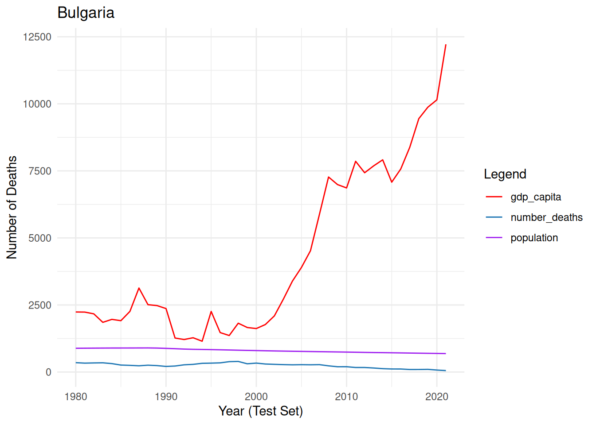
region_code region_name subregion country_code country_name year
1 EU Europe B BGR Bulgaria 1980
2 EU Europe B BGR Bulgaria 1981
3 EU Europe B BGR Bulgaria 1982
4 EU Europe B BGR Bulgaria 1983
5 EU Europe B BGR Bulgaria 1984
6 EU Europe B BGR Bulgaria 1985
7 EU Europe B BGR Bulgaria 1986
8 EU Europe B BGR Bulgaria 1987
9 EU Europe B BGR Bulgaria 1988
10 EU Europe B BGR Bulgaria 1989
11 EU Europe B BGR Bulgaria 1990
12 EU Europe B BGR Bulgaria 1991
13 EU Europe B BGR Bulgaria 1992
14 EU Europe B BGR Bulgaria 1993
15 EU Europe B BGR Bulgaria 1994
16 EU Europe B BGR Bulgaria 1995
17 EU Europe B BGR Bulgaria 1996
18 EU Europe B BGR Bulgaria 1997
19 EU Europe B BGR Bulgaria 1998
20 EU Europe B BGR Bulgaria 1999
21 EU Europe B BGR Bulgaria 2000
22 EU Europe B BGR Bulgaria 2001
23 EU Europe B BGR Bulgaria 2002
24 EU Europe B BGR Bulgaria 2003
25 EU Europe B BGR Bulgaria 2004
26 EU Europe B BGR Bulgaria 2005
27 EU Europe B BGR Bulgaria 2006
28 EU Europe B BGR Bulgaria 2007
29 EU Europe B BGR Bulgaria 2008
30 EU Europe B BGR Bulgaria 2009
31 EU Europe B BGR Bulgaria 2010
32 EU Europe B BGR Bulgaria 2011
33 EU Europe B BGR Bulgaria 2012
34 EU Europe B BGR Bulgaria 2013
number_deaths percent_cause_specific_death_rate age_death_rate death_rate
1 349 0.3563042 3.015428 3.938385
2 332 0.3478589 2.836083 3.734071
3 339 0.3380096 2.924209 3.801514
4 344 0.3366542 2.944172 3.847961
5 314 0.3096067 2.664097 3.504191
6 260 0.2418942 2.090483 2.902142
7 249 0.2393333 2.051553 2.779762
8 233 0.2173244 1.944651 2.597142
9 255 0.2374633 2.109092 2.839201
10 240 0.2245047 2.013402 2.669781
11 209 0.1924352 1.716632 2.324598
12 224 0.2028563 1.797896 2.493877
13 269 0.2490787 2.252225 3.149809
14 286 0.2610918 2.390466 3.375707
15 325 0.2907315 2.787220 3.849069
16 332 0.2895265 2.763979 3.949513
17 342 0.2921679 2.881420 4.089539
18 387 0.3175749 3.378461 4.655919
19 395 0.3342076 3.483218 4.783936
20 307 0.2746319 2.606263 3.739069
21 333 0.2893463 2.823545 4.075802
22 299 0.2660900 2.519178 3.778448
23 287 0.2548461 2.457048 3.647270
24 276 0.2465893 2.444667 3.527807
25 269 0.2443011 2.337294 3.457068
26 274 0.2416780 2.444493 3.540097
27 270 0.2380155 2.421748 3.506940
28 275 0.2433542 2.440078 3.590189
29 231 0.2090063 1.998847 3.030146
30 197 0.1822926 1.735182 2.597187
31 198 0.1797304 1.749344 2.627985
32 169 0.1561086 1.565911 2.278842
33 169 0.1546472 1.535592 2.313203
34 150 0.1437539 1.364434 2.064661
population gdp_capita
1 8859538 2238.803
2 8887801 2234.815
3 8912738 2169.004
4 8933328 1852.813
5 8952608 1963.573
6 8958852 1914.551
7 8963472 2260.427
8 8976205 3132.301
9 8985725 2511.393
10 8936388 2477.021
11 8822365 2366.530
12 8695799 1267.734
13 8559091 1211.981
14 8466532 1278.525
15 8416925 1148.494
16 8357576 2259.259
17 8291403 1470.193
18 8217101 1361.409
19 8138192 1820.449
20 8067463 1659.719
21 8000519 1621.262
22 7928456 1770.907
23 7861949 2092.983
24 7804406 2719.494
25 7749431 3389.687
26 7695047 3899.826
27 7640290 4523.147
28 7586895 5888.777
29 7535590 7271.303
30 7488018 6988.273
31 7437594 6863.667
32 7380021 7857.167
33 7317021 7430.737
34 7264606 7687.714
Series: train_bulgaria_short
Regression with ARIMA(1,0,0) errors
Coefficients:
ar1 population gdp_capita
0.8794 0.4211 -0.1441
s.e. 0.1014 0.0431 0.0834
sigma^2 = 0.01038: log likelihood = 30.23
AIC=-52.46 AICc=-51.08 BIC=-46.36
Training set error measures:
ME RMSE MAE MPE MAPE MASE
Training set -0.009622579 0.09730038 0.07848775 -0.2161251 1.410719 0.9903813
ACF1
Training set 0.118152
Ljung-Box test
data: Residuals from Regression with ARIMA(1,0,0) errors
Q* = 5.566, df = 6, p-value = 0.4735
Model df: 1. Total lags used: 7
Shapiro-Wilk normality test
data: residuals(fit_arimax_bulgaria)
W = 0.96667, p-value = 0.3759
The residuals of the ARIMAX model satisfy both normality and non autocorrelation hypothesis. Now, we begin the forecast:
region_code region_name subregion country_code country_name year
35 EU Europe B BGR Bulgaria 2014
36 EU Europe B BGR Bulgaria 2015
37 EU Europe B BGR Bulgaria 2016
38 EU Europe B BGR Bulgaria 2017
39 EU Europe B BGR Bulgaria 2018
40 EU Europe B BGR Bulgaria 2019
41 EU Europe B BGR Bulgaria 2020
42 EU Europe B BGR Bulgaria 2021
number_deaths percent_cause_specific_death_rate age_death_rate death_rate
35 126 0.11564726 1.0902586 1.7442011
36 114 0.10352625 1.0886572 1.5881881
37 113 0.10503811 1.0077564 1.5853370
38 94 0.08561722 0.8493058 1.3284441
39 95 0.08753663 0.8241317 1.3523060
40 100 0.09252149 0.9008798 1.4335354
41 74 0.05932577 0.6812141 1.0672028
42 54 0.03624283 0.5469074 0.7851413
population gdp_capita
35 7223451 7912.275
36 7177516 7078.860
37 7127436 7570.932
38 7075639 8381.881
39 7024746 9447.656
40 6975467 9874.336
41 6933654 10148.342
42 6877222 12219.342
Let’s plot the predicted versus the actual logarithmic values:
Finally, we can check the error measures in order to analyze the accuracy of the model.
Model ME RMSE MPE MAE MAPE
1 ARIMAX(1,0,0) -0.5854856 0.6495099 -13.31952 0.5854856 13.31952
The ARIMAX(\(1,0,0\)) model shows a modest overprediction bias (ME = –0.59) and a moderate overall error (RMSE = 0.65, MAE = 0.59) on the log scale. Its MPE of –13.32% and MAPE of 13.32% indicate that forecasts typically exceed actual values by about 13%, reflecting reasonable fit but still room for improvement.
As we see in the plot, the auto.arima function has not fully capture the structure of the series. Let’s try to adjust manually another ARIMAX model. First, we need to check if the time series are stationary in the lof-transformed scale.
Augmented Dickey-Fuller Test
data: train_bulgaria_short
Dickey-Fuller = -1.3331, Lag order = 3, p-value = 0.8314
alternative hypothesis: stationary
The main series is not stationary. We difference this series.
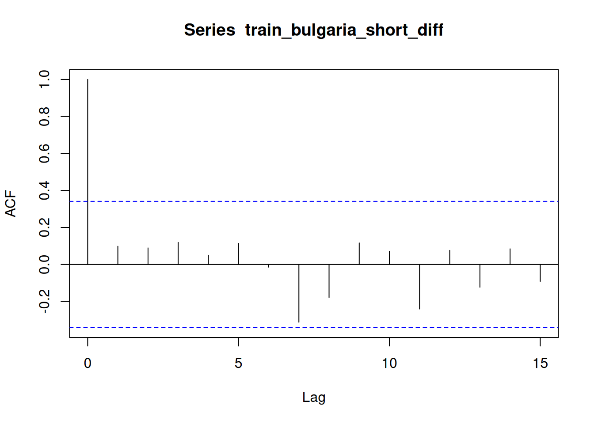
The ACF and PACF plots do not show any significant spikes after differencing once the series.
Next, we difference the log(populatioin) time series over the same short training period:
The ACF plot shows a slow exponential decay over the first few lags. In contrast, the PACF shows two large spikes at lags 1 and 2, and then subsequent lags are essentially within the confidence bounds. This pattern is characteristic of an AR(\(2\)) process.
Finally, we difference the log(gdp_capita) series:
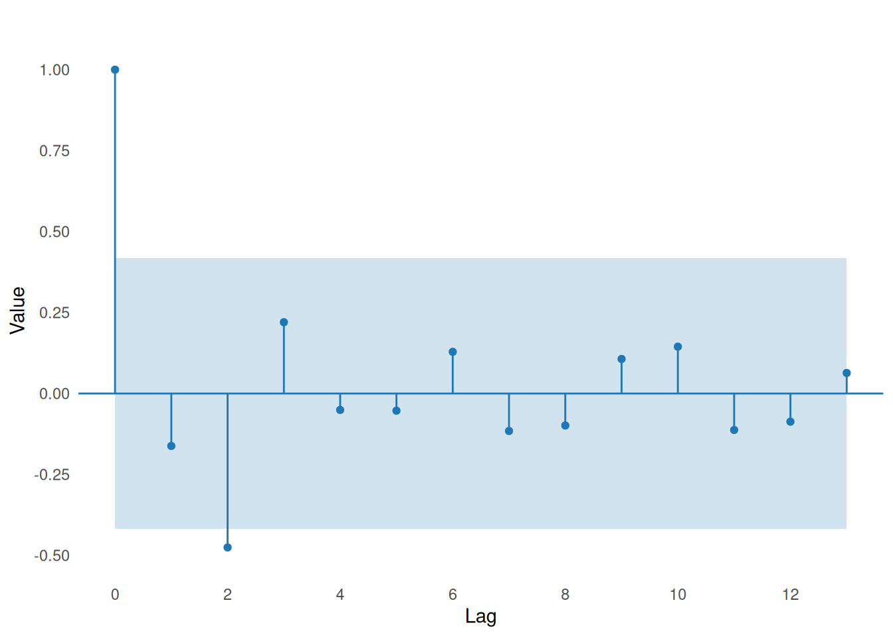
It is noticeable that both ACF and PACF show a single spike at lag 4. This pattern may suggest a high MA component for this series.
Putting all together, we propose the ARIMA(\(1,1,1\)).
Let’s plot the predicted versus the actual logarithmic values:
Finally, we can check the error measures in order to analyze the accuracy of the model.
Model ME RMSE MPE MAE MAPE
1 ARIMAX(1,1,1) -0.3811641 0.4399643 -8.721783 0.3811641 8.721783
The ARIMAX(\(1,1,1\)) model reduces bias (ME ≈ –0.38) and yields an RMSE of 0.44 on the log‐scale, corresponding to about 8.7% average percentage error (MAPE). These results suggest that including both AR(1) and MA(1) terms alongside population and GDP significantly improves fit over simpler specifications, though there remains a small tendency to overpredict.
Final conclusions
Let’s do a summary of the Bulgarian models applied; we are going to change the scale into the original one.
Model ME RMSE MPE MAE MAPE
1 ARIMA(1,0,0) -71.58179 76.28034 -87.33556 71.58179 87.33556
2 ARIMA(1,1,1) -40.60931 43.87869 -50.28430 40.60931 50.28430
Comparing the two ARIMA models on the orginal scale, ARIMA(\(1,1,1\)) clearly outperforms ARIMA(\(1,0,0\)). The ARIMA(1,1,1) model cuts RMSE nearly in half (43.88 vs. 76.28) and reduces MAE from 71.58 to 40.61. In percentage terms, its MAPE of 50.28% is substantially better than 87.34% for ARIMA(1,0,0). Both models slightly overpredict (negative ME/MPE), but ARIMA(1,1,1) exhibits much lower bias (ME = –40.61 vs. –71.58). In short, adding one difference and an MA(1) term yields a markedly more accurate fit.
Finally, we plot both approaches for the test set.
Estonia
Let’s begin the study for Estonia data. Remember that Estonia is the country that has shorter time series.
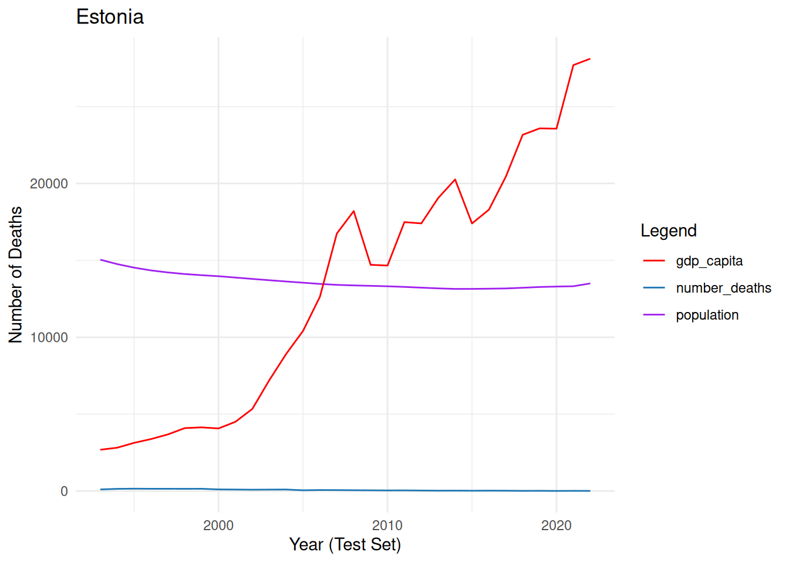
In this case, as the gdp_capita time series increases over time, both number of deaths and population seem to decay, specially the TB deaths series.
Let’s fit the auto.arima() first:
region_code region_name subregion country_code country_name year
1 EU Europe E EST Estonia 1993
2 EU Europe E EST Estonia 1994
3 EU Europe E EST Estonia 1995
4 EU Europe E EST Estonia 1996
5 EU Europe E EST Estonia 1997
6 EU Europe E EST Estonia 1998
7 EU Europe E EST Estonia 1999
8 EU Europe E EST Estonia 2000
9 EU Europe E EST Estonia 2001
10 EU Europe E EST Estonia 2002
11 EU Europe E EST Estonia 2003
12 EU Europe E EST Estonia 2004
13 EU Europe E EST Estonia 2005
14 EU Europe E EST Estonia 2006
15 EU Europe E EST Estonia 2007
16 EU Europe E EST Estonia 2008
17 EU Europe E EST Estonia 2009
18 EU Europe E EST Estonia 2010
19 EU Europe E EST Estonia 2011
20 EU Europe E EST Estonia 2012
21 EU Europe E EST Estonia 2013
22 EU Europe E EST Estonia 2014
23 EU Europe E EST Estonia 2015
24 EU Europe E EST Estonia 2016
number_deaths percent_cause_specific_death_rate age_death_rate death_rate
1 105 0.4932820 5.570508 7.027510
2 143 0.6437962 7.679317 9.777684
3 154 0.7393893 8.812668 10.719501
4 148 0.7781283 8.403848 10.454975
5 148 0.7971561 8.502354 10.574941
6 145 0.7456546 8.896536 10.460583
7 149 0.8074130 8.421116 10.831212
8 106 0.5759930 6.342114 7.587769
9 99 0.5346727 5.278363 7.131974
10 88 0.4794334 5.099150 6.379817
11 95 0.5233583 5.481386 6.930664
12 100 0.5654510 5.670047 7.339180
13 51 0.2945253 2.801189 3.764463
14 67 0.3869254 3.744848 4.974718
15 63 0.3618818 3.403560 4.699108
16 55 0.3298351 2.917253 4.113410
17 49 0.3043667 2.384792 3.671746
18 41 0.2598061 2.017521 3.079292
19 45 0.2959747 2.191062 3.389986
20 35 0.2262005 1.836234 2.632961
21 25 0.1626122 1.417332 1.896818
22 28 0.1809955 1.196359 2.130015
23 21 0.1377682 1.029732 1.597434
24 27 0.1755184 1.133144 2.052000
population gdp_capita
1 1504344 2685.909
2 1475716 2819.126
3 1452776 3134.390
4 1434655 3380.926
5 1421494 3682.952
6 1411206 4093.392
7 1403579 4140.937
8 1397001 4070.609
9 1388174 4505.858
10 1379438 5341.629
11 1370849 7203.523
12 1362682 8914.104
13 1354847 10412.644
14 1346884 12639.400
15 1340709 16744.584
16 1337078 18204.966
17 1334528 14711.735
18 1331450 14663.045
19 1327366 17487.805
20 1322616 17403.205
21 1317921 19056.002
22 1314456 20261.067
23 1314581 17402.038
24 1315850 18295.343
Series: train_estonia_short
Regression with ARIMA(1,0,0) errors
Coefficients:
ar1 population gdp_capita
0.6509 0.6868 -0.612
s.e. 0.2336 0.1356 0.209
sigma^2 = 0.05805: log likelihood = 1.43
AIC=5.14 AICc=7.25 BIC=9.85
Training set error measures:
ME RMSE MAE MPE MAPE MASE
Training set 0.01046587 0.2253823 0.1891687 -0.2463974 4.676384 1.116928
ACF1
Training set -0.06468627
The auto.arima has selected the ARIMA(1,0,0) as the model with the AIC coefficient minimized. Let’s check the residuals:
Ljung-Box test
data: Residuals from Regression with ARIMA(1,0,0) errors
Q* = 2.3701, df = 4, p-value = 0.668
Model df: 1. Total lags used: 5
Shapiro-Wilk normality test
data: residuals(fit_arimax_estonia)
W = 0.94544, p-value = 0.2154
The residuals of the ARIMAX model satisfy both normality and non autocorrelation hypothesis. Now, we begin the forecast:
region_code region_name subregion country_code country_name year
25 EU Europe E EST Estonia 2017
26 EU Europe E EST Estonia 2018
27 EU Europe E EST Estonia 2019
28 EU Europe E EST Estonia 2020
29 EU Europe E EST Estonia 2021
30 EU Europe E EST Estonia 2022
number_deaths percent_cause_specific_death_rate age_death_rate death_rate
25 23 0.14894444 1.0406808 1.7432298
26 13 0.08330129 0.5760393 0.9826747
27 16 0.10536020 0.5933051 1.2069569
28 9 0.05737600 0.3717036 0.6784593
29 13 0.07074830 0.5804094 0.9809951
30 11 0.06411377 0.4552843 0.8321293
population gdp_capita
25 1317432 20437.77
26 1321971 23165.85
27 1326821 23581.66
28 1329674 23565.18
29 1331750 27698.48
30 1350092 28114.14
Point Forecast Lo 95 Hi 95
2017 3.359445 2.887204 3.831687
2018 3.370100 2.806638 3.933563
2019 3.417038 2.819112 4.014965
2020 3.454943 2.843001 4.066884
2021 3.380535 2.762752 3.998319
2022 3.396065 2.775823 4.016307
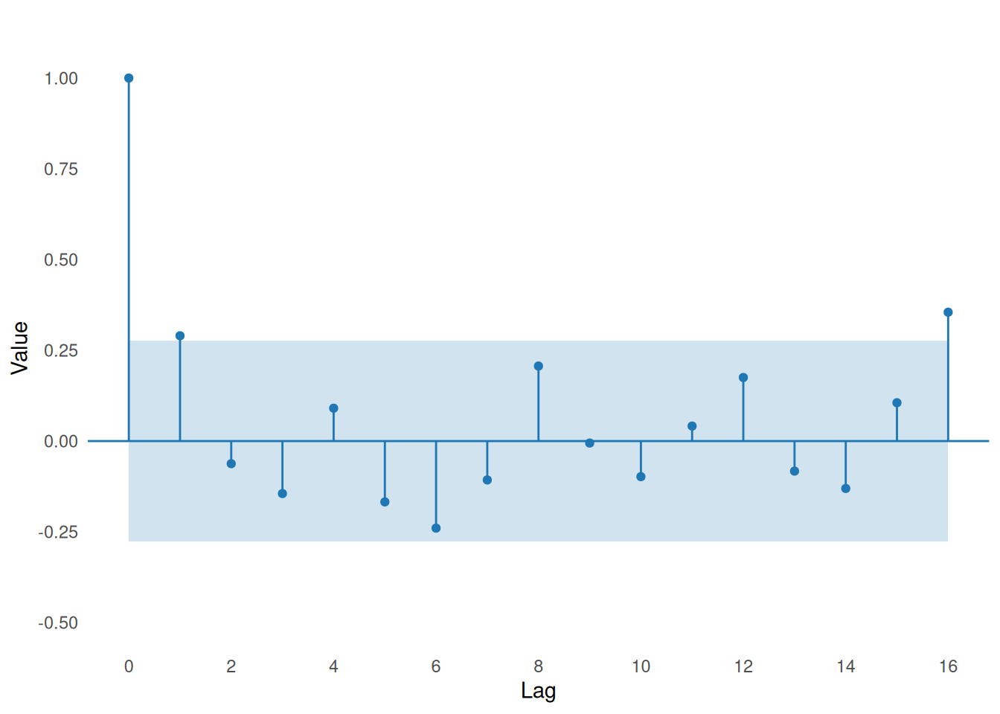
Let’s plot the predicted versus the actual logarithmic values:
Finally, we can check the error measures in order to analyze the accuracy of the model.
Model ME RMSE MPE MAE MAPE
1 ARIMAX(1,0,0) -0.7908376 0.8521655 -32.07368 0.7908376 32.07368
Summary:
Logarithmic regression
We have proved that ARIMA and ARIMAX models do not fit well the time series. The final option, is to apply a logarithmic regression. We will apply two different regressions: the simple regression log(number_deaths) ~ year, and a more complex one, log(number_deaths) ~ year + log(population) + log(gdp_capita).
Spain
Simple regression
In this first regression, we will use the complete data, not the shorter one.
Call:
lm(formula = train_spain ~ year, data = train_spain_df)
Residuals:
Min 1Q Median 3Q Max
-0.29373 -0.08712 -0.01259 0.07245 0.67384
Coefficients:
Estimate Std. Error t value Pr(>|t|)
(Intercept) 137.934885 2.400463 57.46 <2e-16 ***
year -0.065830 0.001212 -54.31 <2e-16 ***
---
Signif. codes: 0 '***' 0.001 '**' 0.01 '*' 0.05 '.' 0.1 ' ' 1
Residual standard error: 0.1626 on 58 degrees of freedom
Multiple R-squared: 0.9807, Adjusted R-squared: 0.9804
F-statistic: 2950 on 1 and 58 DF, p-value: < 2.2e-16
The linear regression of log(number_deaths) on year yields an intercept of 137.93 and a slope of –0.0658 (both highly significant, \(p<2\mathrm{e}{-16}\)), indicating a strong, steady annual decline in log‐deaths. The model explains 98.07% of the variance (\(R^2=0.9807\)), with residuals showing a low standard error (0.1626), confirming an excellent fit during 1960–2000.
Now, we need to further study the residuals of the model.
Breusch-Godfrey test for serial correlation of order up to 10
data: Residuals
LM test = 29.705, df = 10, p-value = 0.0009573
As we see in the plot, the model has not fully capture the structure of the series, meaning we will need to determine an ARIMA structure for the residuals. We begin by plotting the ACF and PACF.
The ACF plot shows an exponential decaying trend, whereas the PACF shows a significant spike at lag 1. This pattern may suggest an AR(\(1\)) component for the residuals.
Let’s fit an ARMA(\(1,0\)).
Series: simple_spain_residuals
ARIMA(1,0,0) with non-zero mean
Coefficients:
ar1 mean
0.9325 0.1624
s.e. 0.0596 0.1840
sigma^2 = 0.009391: log likelihood = 54.9
AIC=-103.8 AICc=-103.37 BIC=-97.52
Training set error measures:
ME RMSE MAE MPE MAPE MASE
Training set -0.01340121 0.09528002 0.06396348 166.4684 213.3983 0.9852093
ACF1
Training set -0.1665804
It seems a well-fitted model (AIC value of \(-103.8\)). Now, we check the residuals of the model:
Ljung-Box test
data: Residuals from ARIMA(1,0,0) with non-zero mean
Q* = 4.6462, df = 9, p-value = 0.864
Model df: 1. Total lags used: 10
Shapiro-Wilk normality test
data: residuals(fit_arima_simple_spain_residuals)
W = 0.91908, p-value = 0.0007045
The residuals have checked the Ljung-Box text; however, they do not pass the normality test.
We begin the forecast phase. The forecast is divided into two steps: 1. The trend pronostic 2. The residuals pronostic
The final pronostic is given by the sum of the above ones.
Finally, we plot the forecasted time series versus the real values, on the original scale.
It is clear that the model have given a more adjusted prediction that all the models tried before. Finally, we need to analyze the error measures.
Model ME RMSE MPE MAE MAPE
1 log(number_deaths) ~ year -4.815682 28.11484 -1.040657 20.54576 7.930388
The trend‐plus‐AR(1) model on \(\log(\text{number_deaths}) \sim \text{year}\) delivers a modest bias (ME = \(–4.82\) deaths) and a low RMSE of \(28.11\), corresponding to an average absolute error of \(20.55\) deaths. Its MAPE of \(7.93\)% indicates that forecasts typically deviate by less than \(8\)%, a substantial improvement over earlier ARIMA‐only approaches. Overall, this specification captures the downward TB mortality trend very effectively.
Complete regression
Now, as we have the population and gdp per capita regressors, we will define a regression model with those variables. Note that in this approach, the shorter dataset will be used, in order to asses the discrepancies on variables’ lengths.
Call:
lm(formula = train_spain_short ~ year + log_population_spain +
log_gdp_capita_spain, data = spain_short_train_df)
Residuals:
Min 1Q Median 3Q Max
-0.25334 -0.05954 0.02206 0.06787 0.23822
Coefficients:
Estimate Std. Error t value Pr(>|t|)
(Intercept) 100.637043 11.328486 8.884 1.53e-11 ***
year -0.032818 0.005862 -5.599 1.15e-06 ***
log_population_spain -1.508314 0.815125 -1.850 0.07068 .
log_gdp_capita_spain -0.224880 0.060343 -3.727 0.00053 ***
---
Signif. codes: 0 '***' 0.001 '**' 0.01 '*' 0.05 '.' 0.1 ' ' 1
Residual standard error: 0.1022 on 46 degrees of freedom
Multiple R-squared: 0.9889, Adjusted R-squared: 0.9882
F-statistic: 1365 on 3 and 46 DF, p-value: < 2.2e-16
The multiple regression of \(\log(\text{deaths})\) on year, \(\log(\text{population})\), and \(\log(\text{GDP per capita})\) explains 98.9% of the variance (\(R^2 = 0.9889\)) with a very small residual error (0.102). Holding population and GDP constant, the coefficient for year is \(-0.0328\) (\(p < 10^{-6}\)), indicating a significant annual decline in log‐deaths. While \(\log(\text{GDP per capita})\) also has a significant negative effect (\(\beta = -0.2249,\;p = 0.0005\)), \(\log(\text{population})\) shows a marginally non‐significant negative association (\(\beta = -1.5083,\;p = 0.0707\)).
Now, we need to check the residuals of the model.
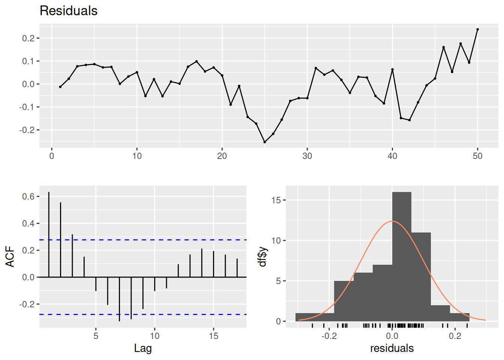
Breusch-Godfrey test for serial correlation of order up to 10
data: Residuals
LM test = 29.871, df = 10, p-value = 0.0008992
As the simple regression, the residuals for this more complex model do not satisfy any of the conditions, meaning that the regression still not capture all the interal structure.
We need to further study the residuals.
The ACF plot shows a very large spike at lag 1 followed by a gradual decay over lags 2-7, where it begins to increase again. The PACF plot exhibits a single dominant spike at lag 1 with all higher-lag partial autocorrelations inside the confidence boundaries. This pattern may suggest, as the simple regression model, an AR(\(1\)) process.
We fit this model on the residuals.
Series: complete_spain_residuals
ARIMA(1,0,0) with non-zero mean
Coefficients:
ar1 mean
0.7026 0.0097
s.e. 0.1073 0.0332
sigma^2 = 0.005447: log likelihood = 60.05
AIC=-114.1 AICc=-113.58 BIC=-108.36
Training set error measures:
ME RMSE MAE MPE MAPE MASE
Training set 0.0004432149 0.07231573 0.05614331 -152.5339 296.1283 0.9138432
ACF1
Training set -0.160539
The low AIC value indicates a good fit. We check now the residuals:
Ljung-Box test
data: Residuals from ARIMA(1,0,0) with non-zero mean
Q* = 11.289, df = 9, p-value = 0.2564
Model df: 1. Total lags used: 10
Shapiro-Wilk normality test
data: residuals(fit_arima_complete_spain_residuals)
W = 0.97985, p-value = 0.5456
Now the residuals satisfy the necessary hypothesis. We begin the pronostics.
Model ME
1 log(number_deaths) ~ year + log(population) + log(gdp_capita) -17.87195
RMSE MPE MAE MAPE
1 38.89572 -8.067772 31.31918 12.73695
Bulgaria
Simple regression
In this first regression, we will use the complete data, not the shorter one.
region_code region_name subregion country_code country_name year
1 EU Europe B BGR Bulgaria 1964
2 EU Europe B BGR Bulgaria 1965
3 EU Europe B BGR Bulgaria 1966
4 EU Europe B BGR Bulgaria 1967
5 EU Europe B BGR Bulgaria 1968
6 EU Europe B BGR Bulgaria 1969
7 EU Europe B BGR Bulgaria 1970
8 EU Europe B BGR Bulgaria 1971
9 EU Europe B BGR Bulgaria 1972
10 EU Europe B BGR Bulgaria 1973
11 EU Europe B BGR Bulgaria 1974
12 EU Europe B BGR Bulgaria 1975
13 EU Europe B BGR Bulgaria 1976
14 EU Europe B BGR Bulgaria 1977
15 EU Europe B BGR Bulgaria 1978
16 EU Europe B BGR Bulgaria 1979
17 EU Europe B BGR Bulgaria 1980
18 EU Europe B BGR Bulgaria 1981
19 EU Europe B BGR Bulgaria 1982
20 EU Europe B BGR Bulgaria 1983
21 EU Europe B BGR Bulgaria 1984
22 EU Europe B BGR Bulgaria 1985
23 EU Europe B BGR Bulgaria 1986
24 EU Europe B BGR Bulgaria 1987
25 EU Europe B BGR Bulgaria 1988
26 EU Europe B BGR Bulgaria 1989
27 EU Europe B BGR Bulgaria 1990
28 EU Europe B BGR Bulgaria 1991
29 EU Europe B BGR Bulgaria 1992
30 EU Europe B BGR Bulgaria 1993
31 EU Europe B BGR Bulgaria 1994
32 EU Europe B BGR Bulgaria 1995
33 EU Europe B BGR Bulgaria 1996
34 EU Europe B BGR Bulgaria 1997
35 EU Europe B BGR Bulgaria 1998
36 EU Europe B BGR Bulgaria 1999
37 EU Europe B BGR Bulgaria 2000
38 EU Europe B BGR Bulgaria 2001
39 EU Europe B BGR Bulgaria 2002
40 EU Europe B BGR Bulgaria 2003
41 EU Europe B BGR Bulgaria 2004
42 EU Europe B BGR Bulgaria 2005
43 EU Europe B BGR Bulgaria 2006
44 EU Europe B BGR Bulgaria 2007
45 EU Europe B BGR Bulgaria 2008
46 EU Europe B BGR Bulgaria 2009
47 EU Europe B BGR Bulgaria 2010
48 EU Europe B BGR Bulgaria 2011
number_deaths percent_cause_specific_death_rate age_death_rate death_rate
1 1157 1.7943827 13.458590 14.206255
2 1104 1.6484993 12.451803 13.461116
3 1070 1.5651055 11.939526 12.956976
4 1166 1.5609939 12.817377 14.030950
5 1002 1.3882731 10.732002 11.971898
6 944 1.1773069 9.939494 11.192526
7 892 1.1570141 9.141033 10.506973
8 840 1.0144315 8.509242 9.840214
9 764 0.9076437 7.568611 8.908374
10 647 0.7941574 6.376634 7.504930
11 565 0.6628421 5.336814 6.510192
12 621 0.6901994 5.862291 7.120090
13 573 0.6485716 5.303017 6.542141
14 508 0.5383523 4.613740 5.769973
15 477 0.5159825 4.342829 5.411845
16 476 0.5042213 4.333327 5.393218
17 349 0.3563042 3.015428 3.938385
18 332 0.3478589 2.836083 3.734071
19 339 0.3380096 2.924209 3.801514
20 344 0.3366542 2.944172 3.847961
21 314 0.3096067 2.664097 3.504191
22 260 0.2418942 2.090483 2.902142
23 249 0.2393333 2.051553 2.779762
24 233 0.2173244 1.944651 2.597142
25 255 0.2374633 2.109092 2.839201
26 240 0.2245047 2.013402 2.669781
27 209 0.1924352 1.716632 2.324598
28 224 0.2028563 1.797896 2.493877
29 269 0.2490787 2.252225 3.149809
30 286 0.2610918 2.390466 3.375707
31 325 0.2907315 2.787220 3.849069
32 332 0.2895265 2.763979 3.949513
33 342 0.2921679 2.881420 4.089539
34 387 0.3175749 3.378461 4.655919
35 395 0.3342076 3.483218 4.783936
36 307 0.2746319 2.606263 3.739069
37 333 0.2893463 2.823545 4.075802
38 299 0.2660900 2.519178 3.778448
39 287 0.2548461 2.457048 3.647270
40 276 0.2465893 2.444667 3.527807
41 269 0.2443011 2.337294 3.457068
42 274 0.2416780 2.444493 3.540097
43 270 0.2380155 2.421748 3.506940
44 275 0.2433542 2.440078 3.590189
45 231 0.2090063 1.998847 3.030146
46 197 0.1822926 1.735182 2.597187
47 198 0.1797304 1.749344 2.627985
48 169 0.1561086 1.565911 2.278842
population gdp_capita
1 8140078 NA
2 8202417 NA
3 8258788 NA
4 8311127 NA
5 8370642 NA
6 8435276 NA
7 8490822 NA
8 8538899 NA
9 8579911 NA
10 8624801 NA
11 8682749 NA
12 8723148 NA
13 8759432 NA
14 8804691 NA
15 8813739 NA
16 8824994 NA
17 8859538 2238.803
18 8887801 2234.815
19 8912738 2169.004
20 8933328 1852.813
21 8952608 1963.573
22 8958852 1914.551
23 8963472 2260.427
24 8976205 3132.301
25 8985725 2511.393
26 8936388 2477.021
27 8822365 2366.530
28 8695799 1267.734
29 8559091 1211.981
30 8466532 1278.525
31 8416925 1148.494
32 8357576 2259.259
33 8291403 1470.193
34 8217101 1361.409
35 8138192 1820.449
36 8067463 1659.719
37 8000519 1621.262
38 7928456 1770.907
39 7861949 2092.983
40 7804406 2719.494
41 7749431 3389.687
42 7695047 3899.826
43 7640290 4523.147
44 7586895 5888.777
45 7535590 7271.303
46 7488018 6988.273
47 7437594 6863.667
48 7380021 7857.167
Call:
lm(formula = train_bulgaria ~ year, data = train_bulgaria_df)
Residuals:
Min 1Q Median 3Q Max
-0.53873 -0.23312 0.06127 0.23183 0.42098
Coefficients:
Estimate Std. Error t value Pr(>|t|)
(Intercept) 71.576183 5.880911 12.17 5.51e-16 ***
year -0.033013 0.002959 -11.16 1.12e-14 ***
---
Signif. codes: 0 '***' 0.001 '**' 0.01 '*' 0.05 '.' 0.1 ' ' 1
Residual standard error: 0.284 on 46 degrees of freedom
Multiple R-squared: 0.7302, Adjusted R-squared: 0.7243
F-statistic: 124.5 on 1 and 46 DF, p-value: 1.117e-14
The linear regression of log(number_deaths) on year yields an intercept of 71.57 and a slope of –0.033 (both highly significant, \(p<2\mathrm{e}{-16}\)), indicating a strong, steady annual decline in log‐deaths. The model explains 98.07% of the variance (\(R^2=0.9807\)), with residuals showing a low standard error (0.1626), confirming an excellent fit during 1960–2000.
Now, we need to further study the residuals of the model.
Breusch-Godfrey test for serial correlation of order up to 10
data: Residuals
LM test = 41.898, df = 10, p-value = 7.819e-06
As we see in the plot, the model has not fully capture the structure of the series, meaning we will need to determine an ARIMA structure for the residuals. We begin by plotting the ACF and PACF.
The ACF plot shows an exponential decaying trend, whereas the PACF shows a significant spike at lag 1. This pattern may suggest an AR(\(1\)) component for the residuals.
Let’s fit an ARMA(\(1,0\)).
Series: simple_bulgaria_residuals
ARIMA(1,0,0) with non-zero mean
Coefficients:
ar1 mean
0.9289 0.0453
s.e. 0.0461 0.1631
sigma^2 = 0.01024: log likelihood = 41.88
AIC=-77.76 AICc=-77.21 BIC=-72.14
Training set error measures:
ME RMSE MAE MPE MAPE MASE
Training set -0.008745631 0.09905412 0.07909578 -3.687074 78.29747 0.993257
ACF1
Training set 0.09638889
It seems a well-fitted model (AIC value of \(-77.76\)). Now, we check the residuals of the model:
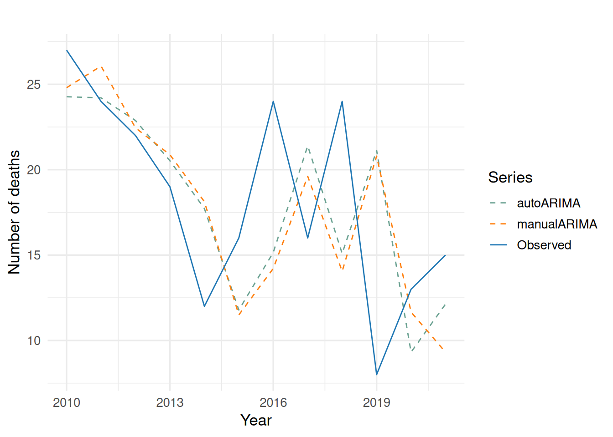
Ljung-Box test
data: Residuals from ARIMA(1,0,0) with non-zero mean
Q* = 5.2721, df = 9, p-value = 0.81
Model df: 1. Total lags used: 10
Shapiro-Wilk normality test
data: residuals(fit_arima_simple_bulgaria_residuals)
W = 0.98588, p-value = 0.8262
The residuals have checked the Ljung-Box text; however, they do not pass the normality test.
We begin the forecast phase. The forecast is divided into two steps: 1. The trend pronostic 2. The residuals pronostic
The final pronostic is given by the sum of the above ones.
Finally, we plot the forecasted time series versus the real values, on the original scale.
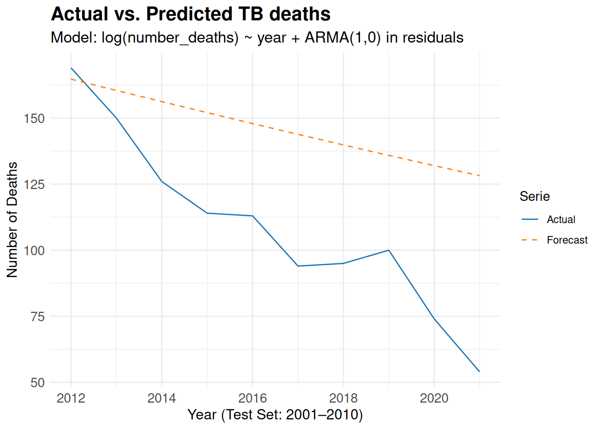
Model ME RMSE MPE MAE MAPE
1 log(number_deaths) ~ year -37.21369 42.84976 -44.46026 38.07049 44.96724
The trend‐only regression (log deaths ~ year) achieves ME = –37.21, RMSE = 42.85, and MAPE ≈ 44.97%, slightly outperforming ARIMA(1,1,1) on RMSE (43.88 vs. 42.85) and MAPE (50.28% vs. 44.97%). Although both models overpredict modestly, the simple linear trend captures most of the series’ dynamics with comparable or better average error than the more complex ARIMA.
Complete regression
Now, as we have the population and gdp per capita regressors, we will define a regression model with those variables. Note that in this approach, the shorter dataset will be used, in order to asses the discrepancies on variables’ lengths.
Call:
lm(formula = train_bulgaria_short ~ year + log_population_bulgaria +
log_gdp_capita_bulgaria, data = bulgaria_short_train_df)
Residuals:
Min 1Q Median 3Q Max
-0.301893 -0.058153 -0.008973 0.083483 0.273151
Coefficients:
Estimate Std. Error t value Pr(>|t|)
(Intercept) 202.31231 51.55533 3.924 0.000470 ***
year -0.04583 0.01230 -3.727 0.000803 ***
log_population_bulgaria -6.45215 1.72393 -3.743 0.000770 ***
log_gdp_capita_bulgaria -0.31674 0.05764 -5.496 5.75e-06 ***
---
Signif. codes: 0 '***' 0.001 '**' 0.01 '*' 0.05 '.' 0.1 ' ' 1
Residual standard error: 0.1431 on 30 degrees of freedom
Multiple R-squared: 0.673, Adjusted R-squared: 0.6403
F-statistic: 20.58 on 3 and 30 DF, p-value: 1.948e-07
The multiple regression of \(\log(\text{deaths})\) on year, \(\log(\text{population})\), and \(\log(\text{GDP per capita})\) explains 64.03% of the variance (\(R^2 = 0.6403\)) with a very small residual error (0.1431). Holding population and GDP constant, the coefficient for year is \(-0.04583\), indicating a significant annual decline in log‐deaths.
Now, we need to check the residuals of the model.
Breusch-Godfrey test for serial correlation of order up to 7
data: Residuals
LM test = 19.863, df = 7, p-value = 0.005873
In contrast with the simple regression, the residuals of the regression do not capture all the temporal structure. We need to further study the residuals.
The ACF plot shows a spike at lag 1 followed by a gradual decay over lags 2-5, where it begins to increase again and has significant spikes at lags 4-5. The PACF plot exhibits a single dominant spike at lag 1 with all higher-lag partial autocorrelations inside the confidence boundaries. This pattern may suggest a more complex model for the residuals. We will study the ARMA(1,1).
We fit this model on the residuals.
Series: complete_bulgaria_residuals
ARIMA(1,0,0) with non-zero mean
Coefficients:
ar1 mean
0.6725 -0.0186
s.e. 0.1346 0.0518
sigma^2 = 0.0112: log likelihood = 28.85
AIC=-51.69 AICc=-50.89 BIC=-47.11
Training set error measures:
ME RMSE MAE MPE MAPE MASE
Training set 0.001188773 0.1026707 0.08040364 234.5635 254.6002 0.8884863
ACF1
Training set 0.148239
The low AIC value indicates a good fit. We check now the residuals:
Ljung-Box test
data: Residuals from ARIMA(1,0,0) with non-zero mean
Q* = 8.9925, df = 6, p-value = 0.174
Model df: 1. Total lags used: 7
Shapiro-Wilk normality test
data: residuals(fit_arima_complete_bulgaria_residuals)
W = 0.97683, p-value = 0.6706
Now the residuals satisfy the necessary hypothesis. We begin the pronostics.
Time Series:
Start = 35
End = 42
Frequency = 1
1 2 3 4 5 6 7 8
160.6578 175.6207 178.6995 177.8869 174.4722 174.0471 172.7186 164.8688
Model ME
1 log(number_deaths) ~ year + log(population) + log(gdp_capita) -76.12146
RMSE MPE MAE MAPE
1 79.20525 -90.67002 76.12146 90.67002
The Netherlands
Simple regression
In this first regression, we will use the complete data, not the shorter one.
region_code region_name subregion country_code country_name year
1 EU Europe W NLD Netherlands 1950
2 EU Europe W NLD Netherlands 1951
3 EU Europe W NLD Netherlands 1952
4 EU Europe W NLD Netherlands 1953
5 EU Europe W NLD Netherlands 1954
6 EU Europe W NLD Netherlands 1955
7 EU Europe W NLD Netherlands 1956
8 EU Europe W NLD Netherlands 1957
9 EU Europe W NLD Netherlands 1958
10 EU Europe W NLD Netherlands 1959
11 EU Europe W NLD Netherlands 1960
12 EU Europe W NLD Netherlands 1961
13 EU Europe W NLD Netherlands 1962
14 EU Europe W NLD Netherlands 1963
15 EU Europe W NLD Netherlands 1964
16 EU Europe W NLD Netherlands 1965
17 EU Europe W NLD Netherlands 1966
18 EU Europe W NLD Netherlands 1967
19 EU Europe W NLD Netherlands 1968
20 EU Europe W NLD Netherlands 1969
21 EU Europe W NLD Netherlands 1970
22 EU Europe W NLD Netherlands 1971
23 EU Europe W NLD Netherlands 1972
24 EU Europe W NLD Netherlands 1973
25 EU Europe W NLD Netherlands 1974
26 EU Europe W NLD Netherlands 1975
27 EU Europe W NLD Netherlands 1976
28 EU Europe W NLD Netherlands 1977
29 EU Europe W NLD Netherlands 1978
30 EU Europe W NLD Netherlands 1979
31 EU Europe W NLD Netherlands 1980
32 EU Europe W NLD Netherlands 1981
33 EU Europe W NLD Netherlands 1982
34 EU Europe W NLD Netherlands 1983
35 EU Europe W NLD Netherlands 1984
36 EU Europe W NLD Netherlands 1985
37 EU Europe W NLD Netherlands 1986
38 EU Europe W NLD Netherlands 1987
39 EU Europe W NLD Netherlands 1988
40 EU Europe W NLD Netherlands 1989
41 EU Europe W NLD Netherlands 1990
42 EU Europe W NLD Netherlands 1991
43 EU Europe W NLD Netherlands 1992
44 EU Europe W NLD Netherlands 1993
45 EU Europe W NLD Netherlands 1994
46 EU Europe W NLD Netherlands 1995
47 EU Europe W NLD Netherlands 1996
48 EU Europe W NLD Netherlands 1997
49 EU Europe W NLD Netherlands 1998
50 EU Europe W NLD Netherlands 1999
51 EU Europe W NLD Netherlands 2000
52 EU Europe W NLD Netherlands 2001
53 EU Europe W NLD Netherlands 2002
54 EU Europe W NLD Netherlands 2003
55 EU Europe W NLD Netherlands 2004
56 EU Europe W NLD Netherlands 2005
57 EU Europe W NLD Netherlands 2006
58 EU Europe W NLD Netherlands 2007
59 EU Europe W NLD Netherlands 2008
60 EU Europe W NLD Netherlands 2009
61 EU Europe W NLD Netherlands 2010
number_deaths percent_cause_specific_death_rate age_death_rate death_rate
1 1922 2.54300079 19.5532750 19.0043012
2 1657 2.14653989 16.5065474 16.1433317
3 1278 1.68188877 12.5840259 12.3097669
4 966 1.19924023 9.3187741 9.2059620
5 798 1.00636862 7.6108754 7.5174512
6 717 0.88122511 6.7469330 6.6692091
7 596 0.70515020 5.4777509 5.4732125
8 515 0.62290601 4.6825156 4.6706087
9 482 0.57261657 4.2576492 4.3086110
10 414 0.48278757 3.5532061 3.6483486
11 325 0.37148801 2.7437928 2.8293838
12 316 0.35940539 2.6297084 2.7150799
13 296 0.31638128 2.4116499 2.5072634
14 251 0.26218480 1.9752148 2.0976099
15 230 0.24615516 1.7631420 1.8965631
16 222 0.22647053 1.6755866 1.8056561
17 187 0.18604003 1.3623827 1.5012484
18 176 0.17636684 1.2627974 1.3970250
19 197 0.18763871 1.4131242 1.5475620
20 167 0.15518283 1.1653621 1.2967852
21 156 0.14231110 1.0424142 1.1964567
22 209 0.18958120 1.3842304 1.5839933
23 206 0.18137635 1.3120618 1.5455487
24 190 0.17166296 1.2158470 1.4137641
25 182 0.16659039 1.1342663 1.3436593
26 199 0.17496505 1.1732114 1.4561473
27 140 0.12231988 0.8452214 1.0164077
28 101 0.09174062 0.5957890 0.7289156
29 173 0.15120395 0.9900729 1.2408817
30 177 0.15724248 0.9938939 1.2608364
31 162 0.14175833 0.8967193 1.1448925
32 178 0.15409254 0.9205673 1.2493683
33 178 0.15179424 0.9172912 1.2436507
34 161 0.13671759 0.8053623 1.1206159
35 166 0.13855040 0.8103940 1.1508437
36 138 0.11246577 0.6859192 0.9522692
37 166 0.13247464 0.7936857 1.1391554
38 157 0.12847896 0.7200449 1.0705689
39 151 0.12161433 0.6912587 1.0230283
40 162 0.12567395 0.7005508 1.0909973
41 136 0.10557039 0.5776036 0.9096077
42 120 0.09233752 0.5196465 0.7963051
43 142 0.10932580 0.5730137 0.9351888
44 172 0.12482311 0.7061930 1.1248888
45 140 0.10489170 0.5524166 0.9101074
46 138 0.10171365 0.5451569 0.8926839
47 127 0.09232268 0.4733110 0.8177457
48 105 0.07732927 0.4079446 0.6726199
49 118 0.08582942 0.4471409 0.7512478
50 120 0.08541716 0.4679117 0.7589125
51 91 0.06475624 0.3458279 0.5714102
52 87 0.06197596 0.3398740 0.5421851
53 72 0.05057778 0.2705021 0.4458500
54 72 0.05072709 0.2610800 0.4437513
55 78 0.05712068 0.2783823 0.4790631
56 70 0.05131890 0.2437266 0.4289213
57 76 0.05614160 0.2558262 0.4649387
58 54 0.04059479 0.1642595 0.3296362
59 51 0.03773976 0.1560307 0.3101135
60 62 0.04618766 0.2073890 0.3750668
61 54 0.03968896 0.1726799 0.3249998
population gdp_capita
1 10113759 NA
2 10264537 NA
3 10382295 NA
4 10493533 NA
5 10615730 NA
6 10751230 NA
7 10889768 NA
8 11026877 NA
9 11187365 NA
10 11348108 NA
11 11486909 1154.687
12 11639371 1252.577
13 11807552 1340.396
14 11969156 1434.776
15 12131887 1665.879
16 12301136 1845.382
17 12464282 1983.351
18 12607834 2151.413
19 12740849 2360.885
20 12890638 2642.956
21 13052082 2927.073
22 13208353 3378.615
23 13342780 4104.451
24 13453743 5345.575
25 13559670 6440.978
26 13680031 7335.509
27 13786640 7925.688
28 13868607 9166.808
29 13953922 11179.390
30 14050176 12798.543
31 14162687 13791.862
32 14262690 11520.448
33 14333902 11072.658
34 14396901 10680.359
35 14462810 9977.160
36 14538958 9926.130
37 14626489 13783.850
38 14724947 16709.560
39 14825916 17744.501
40 14921107 17397.692
41 15030884 21290.860
42 15155091 21732.231
43 15276786 23904.037
44 15389718 23122.411
45 15485453 24646.314
46 15565033 29258.134
47 15640031 29006.809
48 15723620 26700.537
49 15827109 27885.808
50 15940182 28272.643
51 16058758 26214.499
52 16182705 26896.548
53 16288060 29343.245
54 16366914 35750.975
55 16425561 40436.618
56 16465707 41994.714
57 16493851 44900.938
58 16531360 51799.209
59 16597257 57879.944
60 16684147 52722.213
61 16771232 50999.745
Call:
lm(formula = train_netherlands ~ year, data = train_netherlands_df)
Residuals:
Min 1Q Median 3Q Max
-0.73525 -0.24610 0.00716 0.16115 1.11139
Coefficients:
Estimate Std. Error t value Pr(>|t|)
(Intercept) 85.847876 5.206165 16.49 <2e-16 ***
year -0.040717 0.002629 -15.49 <2e-16 ***
---
Signif. codes: 0 '***' 0.001 '**' 0.01 '*' 0.05 '.' 0.1 ' ' 1
Residual standard error: 0.3616 on 59 degrees of freedom
Multiple R-squared: 0.8026, Adjusted R-squared: 0.7992
F-statistic: 239.8 on 1 and 59 DF, p-value: < 2.2e-16
The linear regression of log(number_deaths) on year yields an intercept of 85.84 and a slope of –0.04 (both highly significant, \(p<2\mathrm{e}{-16}\)), indicating a strong, steady annual decline in log‐deaths. The model explains 79.92% of the variance (\(R^2=0.7992\)), with residuals showing a moderate standard error (0.3616).
Now, we need to further study the residuals of the model.
Breusch-Godfrey test for serial correlation of order up to 10
data: Residuals
LM test = 42.342, df = 10, p-value = 6.519e-06
As we see in the plot, the model has not fully capture the structure of the series, meaning we will need to determine an ARIMA structure for the residuals. We begin by plotting the ACF and PACF.
The ACF plot shows an exponential decaying trend, whereas the PACF shows a significant spike at lag 1. This pattern may suggest an AR(\(1\)) component for the residuals.
Let’s fit an ARMA(\(1,0\)).
Series: simple_netherlands_residuals
ARIMA(1,0,0) with non-zero mean
Coefficients:
ar1 mean
0.9408 0.1863
s.e. 0.0479 0.2973
sigma^2 = 0.02599: log likelihood = 24.7
AIC=-43.4 AICc=-42.98 BIC=-37.07
Training set error measures:
ME RMSE MAE MPE MAPE MASE
Training set -0.02419455 0.158559 0.1240325 -31.08554 139.8005 1.017711
ACF1
Training set -0.1029676
It seems a well-fitted model (AIC value of \(-43.4\)). Now, we check the residuals of the model:
Ljung-Box test
data: Residuals from ARIMA(1,0,0) with non-zero mean
Q* = 15.933, df = 9, p-value = 0.0683
Model df: 1. Total lags used: 10
Shapiro-Wilk normality test
data: residuals(fit_arima_simple_netherlands_residuals)
W = 0.95736, p-value = 0.03272
The residuals have checked the Ljung-Box text; however, they do not pass the normality test.
We begin the forecast phase. The forecast is divided into two steps: 1. The trend pronostic 2. The residuals pronostic
The final pronostic is given by the sum of the above ones.
Finally, we plot the forecasted time series versus the real values, on the original scale.
Model ME RMSE MPE MAE MAPE
1 log(number_deaths) ~ year -15.52601 16.03702 -60.48996 15.52601 60.48996
Complete regression
Now, as we have the population and gdp per capita regressors, we will define a regression model with those variables. Note that in this approach, the shorter dataset will be used, in order to asses the discrepancies on variables’ lengths.
Call:
lm(formula = train_netherlands_short ~ year + log_population_netherlands +
log_gdp_capita_netherlands, data = netherlands_short_train_df)
Residuals:
Min 1Q Median 3Q Max
-0.62498 -0.10859 0.03029 0.14217 0.40747
Coefficients:
Estimate Std. Error t value Pr(>|t|)
(Intercept) 99.71010 26.26736 3.796 0.000421 ***
year -0.03696 0.01201 -3.077 0.003481 **
log_population_netherlands -1.44682 2.50368 -0.578 0.566105
log_gdp_capita_netherlands 0.26133 0.15213 1.718 0.092422 .
---
Signif. codes: 0 '***' 0.001 '**' 0.01 '*' 0.05 '.' 0.1 ' ' 1
Residual standard error: 0.1941 on 47 degrees of freedom
Multiple R-squared: 0.8278, Adjusted R-squared: 0.8168
F-statistic: 75.3 on 3 and 47 DF, p-value: < 2.2e-16
The multiple regression of \(\log(\text{deaths})\) on year, \(\log(\text{population})\), and \(\log(\text{GDP per capita})\) explains 81.68% of the variance (\(R^2 = 0.8168\)) with a very small residual error (0.1941). Holding population and GDP constant, the coefficient for year is \(-0.0369\), indicating a significant annual decline in log‐deaths.
Now, we need to check the residuals of the model.
Breusch-Godfrey test for serial correlation of order up to 10
data: Residuals
LM test = 27.317, df = 10, p-value = 0.00232
In contrast with the simple regression, the residuals of the regression do not capture all the temporal structure. We need to further study the residuals.
The ACF plot shows a spike at lag 1 followed by a gradual decay. The PACF plot exhibits a single dominant spike at lag 1 with all higher-lag partial autocorrelations inside the confidence boundaries. This pattern may suggest a more complex model for the residuals. We will study the ARMA(1,3).
We fit this model on the residuals.
Series: complete_netherlands_residuals
ARIMA(2,1,2)
Coefficients:
ar1 ar2 ma1 ma2
-0.5457 -0.1329 0.3802 -0.4286
s.e. 0.2989 0.3567 0.2899 0.3650
sigma^2 = 0.02081: log likelihood = 27.51
AIC=-45.01 AICc=-43.65 BIC=-35.45
Training set error measures:
ME RMSE MAE MPE MAPE MASE
Training set -0.01361171 0.1370043 0.1060606 -35.45929 182.6485 0.8738164
ACF1
Training set -0.01261207
The low AIC value indicates a good fit. We check now the residuals:
Ljung-Box test
data: Residuals from ARIMA(2,1,2)
Q* = 2.8207, df = 6, p-value = 0.831
Model df: 4. Total lags used: 10
Shapiro-Wilk normality test
data: residuals(fit_arima_complete_netherlands_residuals)
W = 0.98182, p-value = 0.6185
Now the residuals satisfy the necessary hypothesis. We begin the pronostics.